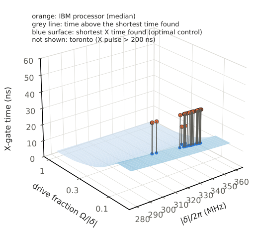
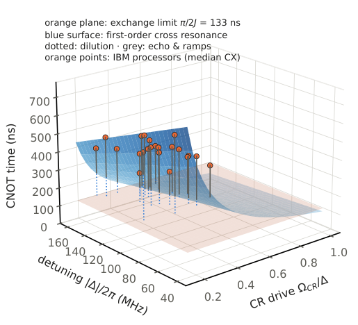
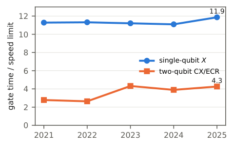
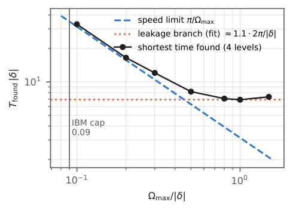

Certified Speed-Limit Diagnostics for Deployed Superconducting Quantum Processors
At a glance
What the paper contributes
Two kinds of results, kept apart on this map. Certified inequalities (green, linked to Lean): the Margolus–Levitin bound, an $L^1$ form of Mandelstam–Tamm, the Zieliński–Zych family for every exponent $\alpha>0$, time-dependent two-level bounds, and an entangling-time bound $J\,T\ge\arccos\lambda$ in arbitrary local dimension (a Bell state needs $J\,T\ge\pi/4$, attained; robust versions with state infidelity $\varepsilon$). Diagnostics on deployed hardware (grey, with the program that computes each number): how far the calibrated gates of IBM superconducting processors are from those bounds, from public, version-pinned calibration snapshots.
- Single-qubit $X$ gates last a median $11.30$ times their two-level speed limit $\pi/\Omega_{\max}$ (1646 qubits, 41 backends), a ratio frozen near $11$ from 2021 to 2025.
- Two-qubit ECR/CX gates last a median $4.22$ times the known CNOT-class bound $\pi/(2j_q)$; the ratio grew from $2.78$ (2021) to $4.26$ (2025) because gates got longer, not because couplings got weaker.
- Calibrated drives sit at fixed fractions of an energy splitting: $\Omega_{\rm peak}\approx0.09|\delta|$ (one qubit), $\Omega_{\rm CR}\approx0.45\Delta$ (two).
- The drive-strength convention is fixed by IBM's calibrated $\pi$ pulses; the $\approx15\%$ residual is explained by the pulse normalization: $\texttt{omegad}\cdot|\mathrm{amp}|\cdot A_{\rm rec}=\pi$ on all 777 qubits to $1.2\cdot10^{-7}$, and the residual tends to $1/(1-e^{-2})=1.15652$.
- At the drive IBM actually uses the $X$ gate is within about $2$ of the square-pulse limit (shape factor $1.87$, or $2.16$ with Qiskit's peak normalization); the $11.3$ is against full drive amplitude, which IBM does not use.
- Optimal control on IBM's own transmon model finds feasible $X$ gates of $\approx16$ ns at IBM's amplitude cap and $4.8$ ns at its full amplitude (minimum at least $4.3$ ns): $7.4$–$8.3$ times faster than the archived $35.6$ ns within the same amplitude budget; $\approx3.4$ ns needs three times that amplitude (numerical witnesses, not physical floors; the 6-level pulse is converged to 12 levels). The fit $\max(\pi/\Omega_{\max},\,\sim1.1\cdot2\pi/|\delta|)$ is empirical, not a theorem; $T\ge\pi/\Omega_{\max}$ (and $2\arcsin(1-e)/\Omega_{\max}$ in the trace metric) holds for any number of levels.
- With the second transmon level the minimal CZ time lies between $0.295$ and $0.331$ of the qubit-only time: $0.4632/J\le T_*\le0.5200/J$ (version~3: a two-copy bound and a certified protocol; before, $0.4511/J\le T_*\le\pi/(6J)$; the certified norm bound is $\pi/(8J)$); optimal control reaches error $2\cdot10^{-8}$ at $0.55/J$ ($0.35$), and for the same task $0.4510/J\le T_*(2\cdot10^{-8})\le0.55/J$. In larger local dimension the construction and the entangling-time theorem approach each other (ratio $\to1$, certified in Lean).
The paper claims no new physics: the speed limits are classical, the two-qubit constants are known for qubits, and the transmon model is IBM's. The entangling-time bound is, for qubits, a known corollary of Dür et al. and Vidal–Hammerer–Cirac, new only as a machine-checked, any-dimension assembly. This blueprint is built from a draft: the paper's own open items are shown where they matter.
🚀 Start here: Observation §IV-A: X gates last a median 11.30 times their two-level speed limit at full drive amplitude.
Main results:
- Theorem §II-A: Zieliński–Zych: π^α ≤ 2M_α τ^α for every α > 0
- Theorem §II-B: entangling time in any local dimension: arccos λ ≤ J·Στₖ
- Corollary §II-B: a Bell vector needs J·Στₖ ≥ π/4, in any local dimension d ≥ 2
- Observation §III-C: the drive convention is c = 1: IBM’s calibrated π pulse rotates by 1.148 π with c = 1 (2.296 π with c = 2)
- Observation §IV-A: X gates last a median 11.30 times their two-level speed limit at full drive amplitude
- Observation §V-B: ECR/CX gates last a median 4.22 times the CNOT-class bound π/(2jq)
- Observation §VI: single-qubit ratio frozen near 11 from 2021 to 2025; two-qubit ratio 2.78 → 4.26
- Observation §VII-A: optimal control: shortest X time found ≈ max(π/Ωₘax, 1.1·2π/|δ|), a speed-limit branch and a leakage-dominated branch
- Observation §VII-B: CZ with the second transmon level: error 2·10⁻⁸ at T = 0.55/J with local controls ≤ 10J, i.e. 0.35 of the qubit-only time and 5 % above the construction π/(6J)
🗺️ Map of the results (click a box to go to it)
Dependencies in the written proof: an arrow A → B means that this proof of B uses A. Every result rests on its written proof; the tags record what was checked besides, and each statement's “Evidence & scope” block says how far. The colour of a box is its strongest tag, in the order above; the tags in the box give the rest. Boxes with a thick border are the main results; click a box to read the statement.
📐 Setting (copied from the paper, §II and §III)
Units have \(\hbar =1\). (§II-A) Let a state have populations \(p_n\ge 0\), \(\sum _n p_n=1\), on energies \(E_n\), and autocorrelation \(S(\tau )=\sum _n p_n e^{-iE_n\tau }\). If \(S(\tau )=0\) (orthogonality) at \(\tau \ge 0\) the single-system bounds below apply. (§II-B) Two systems with finite index types (arbitrary local dimensions, ancillas included) evolve under \(\prod _k\exp [-i\tau _k(A_k\otimes 1+1\otimes B_k+H)]\), with \(A_k,B_k\) Hermitian and unbounded (piecewise-constant local control), \(\tau _k\ge 0\), and a constant Hermitian interaction \(H\) with \(\| H\| \le J\) (operator norm). (§III-A) All data are public snapshots shipped with Qiskit under the Apache 2.0 licence: the fake backends of qiskit-ibm-runtime 0.51.0 (props_*.json: per-qubit \(T_1\), \(T_2\), frequency, anharmonicity, gate errors and durations; conf_*.json: the Duffing-model Hamiltonian variables \(w_q\), \(\delta \), omegad and \(j_q\) in rad/ns), and the calibrated pulse definitions (defs_*.json, 32 backends) of qiskit-terra 0.24.1. (§III-B) IBM’s own model is a Duffing oscillator per transmon, in the frame rotating at the qubit frequency with the rotating-wave approximation (RWA): \(H=(\delta /2)\, n(n-1)+(\Omega /2)(b+b^\dagger )\), with \(\Omega =c\cdot \texttt{omegad}\cdot |D|\) for a drive of complex amplitude \(D\), and an exchange coupling \(j_q(b_i^\dagger b_j+b_ib_j^\dagger )\) between coupled transmons. The speed limit of an \(X\) gate at full amplitude \(|D|=1\) is then \(\tau _{\rm QSL}=\pi /(c\cdot \texttt{omegad})\) (and half of that for \(\sqrt X\)).
1 Introduction
How far are deployed quantum gates from the fastest evolution quantum mechanics allows? We answer for pre-Heron IBM processors, mainly Falcon and Eagle, using public, version-pinned calibration snapshots and inequalities whose proofs are machine-checked in Lean 4. Heron snapshots lack a Hamiltonian. For single-qubit gates, with the drive-strength convention fixed by IBM’s calibrated \(\pi \) pulses, the \(X\) gate lasts a median \(11.3\) times the two-level speed limit at full drive amplitude (1646 qubits, 41 backends). Most of this gap is a design choice: IBM drives at about a tenth of the anharmonicity, and at that drive its pulses are about \(2\) times the square-pulse limit. Within each device’s full amplitude, optimal control on IBM’s model gives gates about \(10\) times faster than the median. For two-qubit gates (1758 coupled pairs, 43 backends), the known qubit-subspace minimal time of controlled-NOT-class gates under exchange coupling (literature) gives a median ratio \(4.22\); across the snapshots it rose, not monotonically, from \(2.78\) (2021) to \(4.26\) (2025) as gates got longer, coinciding with the change from Falcon to Eagle. With the second level and fast arbitrary local control, the minimal time of a controlled-Z gate with ideal local control lies between \(0.295\) and \(0.331\) of the qubit-only exchange time (a two-copy bound and a certified explicit protocol, version 3); bounded local control reaches \(0.35\). We also formalize an entangling-time bound in arbitrary local dimension, known for qubits and new only as a machine-checked assembly. Applied to IBM’s chip-to-chip state transfer (version 2), the same diagnostic places the transfers at \(5.8\)–\(7.9\) times the single-mode minimal time, whose lower bound is machine-checked in Isabelle, and the coherence error of the fastest protocol four to six times below the measured errors. The contribution is a reproducible diagnostic built on the machine-checked inequalities, with explicit guarantees.
🆕 Classical and new: quoted from the current draft (27-oct-2026); every number in it is checked, node by node, below.
↳ Not used by another result of the paper.
This paper contributes five things. (1) Certified bounds. The inequalities listed in Table I are proved in Lean 4 in the public development (the two-qubit gate bound \(\pi /(2j_q)\) behind the headline \(4.22\) is taken from the literature and is not among them): Margolus–Levitin, an \(L^1\) form of Mandelstam–Tamm, the Zieliński–Zych family for every exponent \(\alpha {\gt}0\) (whose key auxiliary inequality the original paper states without proof), a time-dependent single-qubit bound with its equality case for fixed-axis pulses and its finite-tolerance version, an entangling-time bound in arbitrary local dimension with its shifted, locally equivalent (ECR) and finite-tolerance versions (Section II), and, for the CZ in \(d\)-level transmons, the norm bounds behind its asymptotic tightness and the key lemma of the refined bound (Section VII). (2) A convention fixed by independent data. The drive-strength parameter is pinned by IBM’s calibrated \(\pi \) pulses through an exact pulse-area identity that holds on all 777 qubits with pulse definitions, up to which of two pulse normalizations reaches the qubit, which also reveals that it is derived from calibration rather than measured independently (Section III). (3) A sweep of deployed hardware: single-qubit gates on 1646 qubits, two-qubit gates on 1758 pairs, and a 2021–2025 time series (Sections IV–VI); for the single-qubit sweep, a falsifier and three rival hypotheses were written before the analysis, and we report their fate. (4) Feasible times found by optimal control on the vendor’s own model, bracketed by lower bounds (certified, or proved in the text) and, for the CZ, by an explicit construction, which in \(d\)-level transmons approaches the entangling-time bound as \(d\to \infty \) at fixed interaction norm, with ideal local control (Section VII). (5) An application beyond gates (version 2): IBM’s chip-to-chip state transfer runs at \(5.8\)–\(7.9\) times the single-mode minimal time, whose lower bound we machine-check in Isabelle; the master equation of the optimal protocol puts its coherence error four to six times below the measured errors (Section VIII). We claim no new physics: the speed limits are classical, the two-qubit constants are known for qubits, and the transmon model is IBM’s. The exceptions are mathematical: the \(d\)-level quadrature code for the CZ and its asymptotic tightness were not found in the sources we read (Section VII). To our knowledge no prior work applies a proof-assistant-certified QSL to public calibration data with a per-gate gap; a search that finds nothing does not prove novelty. Section IX states what the certificate covers.
↳ Not used by another result of the paper.
2 Certified Bounds
Certified statements used in this paper (Lean 4, commit 42f307b; theorem names with prefix QSL.) and their status in the literature.
margolus_levitin: \(\pi \le 2\langle E\rangle \tau \). Status: classical (Margolus–Levitin).
mandelstam_tamm_L1, _weak: \(1\le D_1\tau \le \Delta E\, \tau \). Status: weak form of Mandelstam–Tamm.
zielinski_zych_all: \(\pi ^\alpha \le 2M_\alpha \tau ^\alpha \), all \(\alpha {\gt}0\). Status: stated in Zieliński–Zych; key inequality unproved there.
Qudit.arccos_le_entangling_time: \(\arccos \lambda \le J\sum \tau _k\). Status: corollary of Basyildiz–Jameson–Gong and Rudnicki.
Qudit.pi_div_four_le_entangling_time_fin: Bell: \(J\sum \tau _k\ge \pi /4\), any \(d\). Status: \(d=2\): Dür et al., Vidal–Hammerer–Cirac.
Qudit.entangling_time_tight: attained by \(J\, Z\otimes X\). Status: \(d=2\): Dür et al., Vidal–Hammerer–Cirac.
Qudit.pi_div_four_le_entangling_time_local, _shift_local: same for \((P\otimes Q)\, \)Bell (ECR). Status: corollary.
TwoQubit.entangling_time_lower_bound: chord form, constant \(\sqrt{2-\sqrt2}\). Status: weaker earlier version.
Qudit.arccos_le_entangling_time_shift: \(\| H\| \to \| H-c\mathbb 1\| \). Status: corollary; \(d=2\): Dür et al.
Qudit.pi_div_eight_le_heisenberg_time: Heisenberg Bell: \(T\ge \pi /8\). Status: \(d=2\), no ancilla: Dür et al.
Gate.fsAngle_le_time_halfWidth: angle \(\le (\Omega _{\max }/2)\, T\), piecewise \(H(t)\). Status: standard (shifted MT).
FixedAxis.mandelstam_tamm_integral_eq_solution: \(\int \Delta E=\arccos |\langle \psi _0|\psi _T\rangle |\), fixed axis. Status: equality case of Mandelstam–Tamm.
Qudit.pi_div_four_sub_le_entangling_time_approx: Bell to fidelity \(1-\varepsilon \): \(J\sum \tau _k\ge \pi /4-\arcsin \sqrt\varepsilon \). Status: robust corollary; formalized here.
Gate.two_arccos_sqrt_le_time_approx: transfer to fidelity \(1-\varepsilon \): \(\Omega _{\max }T\ge 2\arccos \sqrt\varepsilon \). Status: two-level; tight.
Exchange.exchange_norm_ge, _le, ratio_tendsto_one: \(\lambda _d^2/2\le \kappa _d\le 2(d-1)\); \(2\kappa _d/\lambda _d^2\to 1\). Status: not found in the sources read.
Exchange.refined_cz_lemma: \(\tfrac 14\mathrm{Tr}[(P_A\otimes P_B)H_c^2]\le \tfrac {97}{32}J^2\), rank-2 codes, \(d=3\). Status: lemma of the refined CZ bound.
Lean · ours, in partshow
the statements of Table I (twenty Lean names), each checked by the Lean kernel in the public repository (commit 42f307b); the «status» column is the paper’s reading of the literature, not a Lean statement
QSL.margolus_levitinQSL.mandelstam_tamm_L1QSL.mandelstam_tamm_weakQSL.zielinski_zych_allQSL.Qudit.arccos_le_entangling_timeQSL.Qudit.pi_div_four_le_entangling_time_finQSL.Qudit.entangling_time_tightQSL.Qudit.pi_div_four_le_entangling_time_localQSL.Qudit.pi_div_four_le_entangling_time_shift_localQSL.TwoQubit.entangling_time_lower_boundQSL.Qudit.arccos_le_entangling_time_shiftQSL.Qudit.pi_div_eight_le_heisenberg_timeQSL.Gate.fsAngle_le_time_halfWidthQSL.FixedAxis.mandelstam_tamm_integral_eq_solutionQSL.Qudit.pi_div_four_sub_le_entangling_time_approxQSL.Gate.two_arccos_sqrt_le_time_approxQSL.Exchange.exchange_norm_geQSL.Exchange.exchange_norm_leQSL.Exchange.ratio_tendsto_oneQSL.Exchange.refined_cz_lemma
✅ Checked when this page was built: ApproxSpeedLimits.lean, ExchangeQuadrature.lean, FixedAxisSaturation.lean, GateEigenphases.lean, MandelstamTamm.lean, MargolusLevitin.lean, QuditEntangling.lean, QuditEntanglingShift.lean, RefinedCZBound.lean, TwoQubitEntangling.lean, ZielinskiZych.lean compiles with Lean 4.35.0, no errors, no sorry. Axioms — margolus_levitin, mandelstam_tamm_L1, mandelstam_tamm_weak, zielinski_zych_all, arccos_le_entangling_time, pi_div_four_le_entangling_time_fin, entangling_time_tight, pi_div_four_le_entangling_time_local, pi_div_four_le_entangling_time_shift_local, entangling_time_lower_bound, arccos_le_entangling_time_shift, pi_div_eight_le_heisenberg_time, fsAngle_le_time_halfWidth, mandelstam_tamm_integral_eq_solution, pi_div_four_sub_le_entangling_time_approx, two_arccos_sqrt_le_time_approx, exchange_norm_ge, exchange_norm_le, ratio_tendsto_one, refined_cz_lemma: propext, Classical.choice, Quot.sound.
Reproduce: Lean 4.35.0, Mathlib f0b4c8150aa0; in that Lean project, lake env lean ApproxSpeedLimits.lean ExchangeQuadrature.lean FixedAxisSaturation.lean GateEigenphases.lean MandelstamTamm.lean MargolusLevitin.lean QuditEntangling.lean QuditEntanglingShift.lean RefinedCZBound.lean TwoQubitEntangling.lean ZielinskiZych.lean (SHA-256 of the compiled file: 224c15dcafc7d45b…; a source page on this site may show it with comments edited, under its own hash).
Trust base: 🔒 kernel only — only part of the statement is formal (see the box). Lean: 20 results, standard axioms only
Proof: in this note·Formalized: Lean 4, by the author (public formalizations repository)·Covers: part: the statements of Table I (twenty Lean names), each checked by the Lean kernel in the public repository (commit 42f307b); the «status» column is the paper’s reading of the literature, not a Lean statement·Cite: doi:10.5281/zenodo.23783382
🆕 Classical and new: status in the literature as printed in Table I: classical, weak form of Mandelstam–Tamm, «stated in [ZZ]; key inequality unproved there», corollary of Basyildiz–Jameson–Gong and Rudnicki, d = 2 known (Dür et al.; Vidal–Hammerer–Cirac), standard (shifted MT), equality case of MT, «robust corollary; formalized here» for the two tolerance (ε) theorems, «not found in the sources read» for the exchange-norm theorems, and «lemma of the refined CZ bound» for the 97/32 lemma.
↳ Not used by another result of the paper.
Let a state have populations \(p_n\ge 0\), \(\sum _n p_n=1\), on energies \(E_n\), and autocorrelation \(S(\tau )=\sum _n p_n e^{-iE_n\tau }\). If \(S(\tau )=0\) (orthogonality) at \(\tau \ge 0\) and \(E_n\ge 0\), then \(\pi \le 2\langle E\rangle \tau \).
Lean · oursshow
✅ Checked when this page was built: MargolusLevitin.lean compiles with Lean 4.35.0, no errors, no sorry. Axioms — margolus_levitin: propext, Classical.choice, Quot.sound.
Reproduce: Lean 4.35.0, Mathlib f0b4c8150aa0; in that Lean project, lake env lean MargolusLevitin.lean (SHA-256 of the compiled file: 224c15dcafc7d45b…; a source page on this site may show it with comments edited, under its own hash).
Trust base: 🔒 kernel only. Lean: 1 result, standard axioms only
Proof: in this note·Formalized: Lean 4, by the author (public formalizations repository)·Covers: the whole statement·Cite: doi:10.5281/zenodo.23783382
🆕 Classical and new: classical (Margolus and Levitin, 1998); Table I: «classical».
↳ Used in: Theorem §II-A
Formalized in Lean (see the linked declarations).
If \(S(\tau )=0\) at \(\tau \ge 0\), then \(1\le D_1\tau \) with \(D_1=\sum _n p_n|E_n-\bar E|\); and \(1\le \Delta E\, \tau \). The full MT constant \(\tau \ge \pi /(2\Delta E)\) is not proved in the development.
Lean · oursshow
✅ Checked when this page was built: MandelstamTamm.lean compiles with Lean 4.35.0, no errors, no sorry. Axioms — mandelstam_tamm_L1, mandelstam_tamm_weak: propext, Classical.choice, Quot.sound.
Reproduce: Lean 4.35.0, Mathlib f0b4c8150aa0; in that Lean project, lake env lean MandelstamTamm.lean (SHA-256 of the compiled file: 457f13a1a2df01b9…; a source page on this site may show it with comments edited, under its own hash).
Trust base: 🔒 kernel only. Lean: 2 results, standard axioms only
Proof: in this note·Formalized: Lean 4, by the author (public formalizations repository)·Covers: the whole statement·Cite: doi:10.5281/zenodo.23783382
🆕 Classical and new: a weak form of Mandelstam–Tamm (Table I). The paper: the full constant $\tau\ge\pi/(2\Delta E)$ is not proved in the development.
↳ Not used by another result of the paper.
Formalized in Lean (see the linked declarations).
If \(S(\tau )=0\) at \(\tau \ge 0\), with \(E_n\ge E_0\) on populated levels and \(M_\alpha =\sum _n p_n(E_n-E_0)^\alpha \), then \(\pi ^\alpha \le 2M_\alpha \tau ^\alpha \) for every \(\alpha {\gt}0\). The auxiliary inequality \(x^\alpha -\pi ^\alpha /2+(\pi ^\alpha /2)\cos x+\alpha \pi ^{\alpha -1}\sin x\ge 0\) (\(x\ge 0\)) is stated without proof in the original paper for all \(\alpha {\gt}0\); Lean proves it for \(0{\lt}\alpha \le 1\) and for \(\alpha \ge 1\).
Lean · oursshow
Isabelle · oursshow
zielinski_zych · Isabelle/AFP/Quantum_Speed_Limits/Zielinski_Zych.thy, line 464 — the bound for 0 < α ≤ 1 (Isabelle entry Quantum_Speed_Limits); the Lean development covers every α > 0
theorem zielinski_zych:
fixes p E :: "nat \<Rightarrow> real" and e0 a M ta :: real
assumes a0: "0 < a" and a1: "a \<le> 1"
and hp: "\<forall>n. 0 \<le> p n" and hE: "\<forall>n. e0 \<le> E n" and hta: "0 \<le> ta"
and hsum: "p sums 1"
and hM: "(\<lambda>n. p n * (E n - e0) powr a) sums M"
and hRe: "(\<lambda>n. p n * cos (E n * ta)) sums 0"
and hIm: "(\<lambda>n. p n * sin (E n * ta)) sums 0"
shows "pi powr a \<le> 2 * M * ta powr a"✅ Checked when this page was built: ZielinskiZych.lean compiles with Lean 4.35.0, no errors, no sorry. Axioms — zielinski_zych_all, zielinski_zych_time_all, zz_inequality, zz_inequality_of_one_le: propext, Classical.choice, Quot.sound.
Reproduce: Lean 4.35.0, Mathlib f0b4c8150aa0; in that Lean project, lake env lean ZielinskiZych.lean (SHA-256 of the compiled file: 413bdc0e08aba2ad…; a source page on this site may show it with comments edited, under its own hash).
Trust base: 🔒 kernel only. Lean: 4 results, standard axioms only · Isabelle: 1 result, no oracles
Proof: in this note·Formalized: Isabelle/HOL, Lean 4, by the author (public formalizations repository)·Covers: the whole statement·Cite: doi:10.5281/zenodo.23783382
🆕 Classical and new: stated in Zieliński and Zych (2006); the key inequality is stated there without proof for all α > 0 (Table I); Lean proves it for 0 < α ≤ 1 and for α ≥ 1.
↳ Not used by another result of the paper.
Formalized in Lean (see the linked declarations).
💡 In plain words (commentary, not part of the paper)
What it says. A quantum state cannot turn into a state orthogonal to it faster than its energy allows. If the energy above the ground level \(E_0\) is spread as \(p_n\) over levels \(E_n\), the time \(\tau \) to reach an orthogonal state obeys \(\pi ^\alpha \le 2M_\alpha \tau ^\alpha \), where \(M_\alpha \) is the \(\alpha \)-th moment of that energy. For \(\alpha =1\) this is the Margolus–Levitin bound; the statement here holds for every exponent \(\alpha {\gt}0\).
Why it is true. The paper puts the weight on one auxiliary inequality, \(x^\alpha -\pi ^\alpha /2+(\pi ^\alpha /2)\cos x+\alpha \pi ^{\alpha -1}\sin x\ge 0\) for \(x\ge 0\), and says that the original paper states it without proof for all \(\alpha {\gt}0\), while the Lean development proves it in two ranges, \(0{\lt}\alpha \le 1\) and \(\alpha \ge 1\). (Supposed, not written in the paper: the bound follows by putting \(x=(E_n-E_0)\tau \) and averaging over \(p_n\).)
What is new and what is not. Table I of the paper lists the statement as “stated in [ZZ]; key inequality unproved there”: the claim of the paper is the proof, checked by the Lean kernel, not the inequality. Numbers. None: this is a theorem, not a measurement.
For a two-level system driven at constant Rabi frequency \(\Omega \), ML gives \(\tau \ge \pi /\Omega \) for \(|0\rangle \to |1\rangle \), saturated by a square \(\pi \) pulse. For a time-dependent drive two further statements are certified. (i) Any piecewise-constant evolution whose Hamiltonians satisfy \(\| H_k-c_k\mathbb 1\| \le \Omega _{\max }/2\) for some real \(c_k\) moves any state by a Fubini–Study angle at most \((\Omega _{\max }/2)\, T\); hence \(|0\rangle \to |1\rangle \) needs \(T\ge \pi /\Omega _{\max }\) for every pulse shape. (ii) For a fixed-axis drive \(H(t)=f(t)\, \sigma _x/2\) with \(f\ge 0\) and \(\int f\le \pi \), starting from \(|0\rangle \), the generalized MT bound \(\int \Delta E\, dt\ge \arccos |\langle \psi _0|\psi _T\rangle |\) holds with equality: every fixed-axis \(\pi \) pulse has speed-limit ratio exactly \(1\), whatever its shape. It does not extend to DRAG pulses.
Lean · ours, in partshow
constant Rabi frequency: Margolus–Levitin. Time-dependent drive: (i) piecewise-constant evolutions with spectral width at most Ω_max move any state by a Fubini–Study angle at most (Ω_max/2)T; (ii) fixed-axis drive: equality case of the generalized Mandelstam–Tamm bound; (iii) transfer to fidelity 1−ε: Ω_max T ≥ 2 arccos √ε. Continuous pulses are covered only as limits of piecewise-constant ones (not formalized).
✅ Checked when this page was built: ApproxSpeedLimits.lean, FixedAxisSaturation.lean, GateEigenphases.lean, MargolusLevitin.lean compiles with Lean 4.35.0, no errors, no sorry. Axioms — margolus_levitin, fsAngle_le_time_halfWidth, mandelstam_tamm_integral_eq_solution, two_arccos_sqrt_le_time_approx: propext, Classical.choice, Quot.sound.
Reproduce: Lean 4.35.0, Mathlib f0b4c8150aa0; in that Lean project, lake env lean ApproxSpeedLimits.lean FixedAxisSaturation.lean GateEigenphases.lean MargolusLevitin.lean (SHA-256 of the compiled file: 224c15dcafc7d45b…; a source page on this site may show it with comments edited, under its own hash).
Trust base: 🔒 kernel only — only part of the statement is formal (see the box). Lean: 4 results, standard axioms only
Proof: in this note·Formalized: Lean 4, by the author (public formalizations repository)·Covers: part: constant Rabi frequency: Margolus–Levitin. Time-dependent drive: (i) piecewise-constant evolutions with spectral width at most Ω_max move any state by a Fubini–Study angle at most (Ω_max/2)T; (ii) fixed-axis drive: equality case of the generalized Mandelstam–Tamm bound; (iii) transfer to fidelity 1−ε: Ω_max T ≥ 2 arccos √ε. Continuous pulses are covered only as limits of piecewise-constant ones (not formalized).·Cite: doi:10.5281/zenodo.23783382
🆕 Classical and new: the single-qubit reference time used in Section IV; (i) is the standard shifted Mandelstam–Tamm bound, (ii) the equality case of Mandelstam–Tamm, behind the near-unit ratios of Ishida–Hasegawa for π pulses; it does not extend to DRAG pulses.
↳ Used in: §IV-A, Proposition §VII-A
🧪 Lab: A pulse on the Bloch sphere: when the speed limit is met with equality, and when not
Integrates the qubit under \(H(t)=\tfrac 12[f(t)\sigma _x+\beta f^{\prime }(t)\sigma _y+\Delta \sigma _z]\) exactly, step by step, from \(|0\rangle \), and draws the path on the Bloch sphere (▶ runs the time). It compares the Mandelstam–Tamm integral \(\int \Delta E\, dt\) with the Fubini–Study angle actually travelled: for a fixed axis and \(f\ge 0\) they are equal for every shape (the Lean equality case), which is why a speed-limit estimator read on a \(\pi \) pulse returns 1; a DRAG quadrature \(\beta \) or a detuning \(\Delta \) bends the path and the ratio exceeds 1.
Two systems with finite index types (arbitrary local dimensions, ancillas included) evolve under \(\prod _k\exp [-i\tau _k(A_k\otimes 1+1\otimes B_k+H)]\), with \(A_k,B_k\) Hermitian and unbounded (piecewise-constant local control), \(\tau _k\ge 0\), and a constant Hermitian interaction \(H\) with \(\| H\| \le J\) (operator norm). If the evolution maps a unit product vector to \(\Phi \), and every unit product vector has overlap at most \(\lambda \) with \(\Phi \), then \(\arccos \lambda \le J\sum _k\tau _k\).
✅ Checked when this page was built: QuditEntangling.lean, QuditEntanglingShift.lean compiles with Lean 4.35.0, no errors, no sorry. Axioms — arccos_le_entangling_time, arccos_le_entangling_time_shift: propext, Classical.choice, Quot.sound.
Reproduce: Lean 4.35.0, Mathlib f0b4c8150aa0; in that Lean project, lake env lean QuditEntangling.lean QuditEntanglingShift.lean (SHA-256 of the compiled file: f4a5538fe9427bac…; a source page on this site may show it with comments edited, under its own hash).
Trust base: 🔒 kernel only. Lean: 2 results, standard axioms only
Proof: in this note·Formalized: Lean 4, by the author (public formalizations repository)·Covers: the whole statement·Cite: doi:10.5281/zenodo.23783382
🆕 Classical and new: a corollary of Basyildiz–Jameson–Gong and Rudnicki (Table I); «new only as a machine-checked, any-dimension assembly»; for qubits a known corollary of Dür et al. and Vidal–Hammerer–Cirac.
↳ Used in: Corollary §II-B, §VII-B, §VII-B, §VII-B, §VII-B, §VII-B
Formalized in Lean (see the linked declarations).
💡 In plain words (commentary, not part of the paper)
What it says. Take two quantum systems of any size, each with as many extra “ancilla” levels as you like, and let them interact through a fixed coupling \(H\) whose strength is at most \(J\). You may act on each system separately as violently and as fast as you want. Start from an unentangled (product) state. If the state you want to reach is so entangled that every unentangled state overlaps it by at most \(\lambda \), then the total interaction time \(\sum _k\tau _k\) is at least \(\arccos (\lambda )/J\). Local control is free; only the coupling costs time.
Why it is true. The paper names the method: a Duhamel estimate in the Fubini–Study angle, chained over the control steps. (Supposed, not written in the paper: local steps leave the angle to the set of product states unchanged, and the interaction moves it at rate at most \(J\).)
What is new and what is not. The paper says this is, for qubits, a known corollary of Dür–Vidal–Cirac–Linden– Popescu and Vidal–Hammerer–Cirac, and of the Basyildiz–Jameson–Gong machinery and Rudnicki’s Schmidt-plus-arccos step. What it adds is the machine-checked statement for arbitrary local dimension and ancillas. It also says the initial state must be a product: with pre-entangled ancillas the argument does not apply.
Numbers. None here. The bound is exact for the Bell state (next node).
The overlap of a state with product vectors is bounded by its largest Schmidt coefficient. For a two-level Bell vector \((e_{00}+e_{11})/\sqrt2\) inside qudits of any dimension \(d\ge 2\), \(\lambda =1/\sqrt2\), hence \(J\sum _k\tau _k\ge \pi /4\).
Lean · oursshow
✅ Checked when this page was built: QuditEntangling.lean compiles with Lean 4.35.0, no errors, no sorry. Axioms — pi_div_four_le_entangling_time_fin: propext, Classical.choice, Quot.sound.
Reproduce: Lean 4.35.0, Mathlib f0b4c8150aa0; in that Lean project, lake env lean QuditEntangling.lean (SHA-256 of the compiled file: f4a5538fe9427bac…; a source page on this site may show it with comments edited, under its own hash).
Trust base: 🔒 kernel only. Lean: 1 result, standard axioms only
Proof: in this note·Formalized: Lean 4, by the author (public formalizations repository)·Covers: the whole statement·Cite: doi:10.5281/zenodo.23783382
🆕 Classical and new: for d = 2 known with equality: Dür et al. (2001) and Vidal–Hammerer–Cirac (2002) (Table I).
↳ Used in: Proposition §II-B, Corollary §II-B, Theorem §II-B, §V-C
Formalized in Lean (see the linked declarations).
💡 In plain words (commentary, not part of the paper)
What it says. Creating a maximally entangled pair (a Bell state) from an unentangled one costs interaction time at least \(\pi /(4J)\), in whatever dimension the two systems live. The reason is that the Bell state overlaps every product state by at most \(1/\sqrt2\), and \(\arccos (1/\sqrt2)=\pi /4\). The next node shows the bound is attained.
Why it is true. It is the previous theorem with \(\lambda =1/\sqrt2\); the paper gives that value for a two-level Bell vector inside qudits of any dimension \(d\ge 2\) (the overlap of a state with product vectors is bounded by its largest Schmidt coefficient).
What is new and what is not. For \(d=2\) the result is known with equality (Dür et al., Vidal–Hammerer–Cirac); the paper’s own words: “new only as a machine-checked, any-dimension assembly”.
A consequence the paper draws (and its limit). CNOT maps \(|{+}\rangle |0\rangle \) to a Bell state, so any CNOT on the qubit subspace of two \(d\)-level systems needs \(J\, T\ge \pi /4\), with \(J\) the norm of the interaction on the full \(d\)-level space. A numerical check (cnot_m3.py) gives the overlap constants \(m_2=0.707107\) and \(m_3=0.707105\) over 45 starts, i.e. \(T\ge 0.785401/J\), matching \(1/\sqrt2\) (numbers quoted from the paper; a re-run for this blueprint reproduced \(m_2=0.707107\) but its \(m_3\) search did not finish within ten minutes). The CNOT corollary itself is the Bell bound applied to \(|{+}\rangle |0\rangle \); the extension to gates only locally equivalent to CNOT, such as ECR, is a Lean theorem (pi_div_four_le_entangling_time_local).
The bound is attained: \(H=J\, Z\otimes X\) reaches the Bell vector from a product vector in one step of length \(\pi /(4J)\).
Lean · oursshow
✅ Checked when this page was built: QuditEntangling.lean compiles with Lean 4.35.0, no errors, no sorry. Axioms — entangling_time_tight: propext, Classical.choice, Quot.sound.
Reproduce: Lean 4.35.0, Mathlib f0b4c8150aa0; in that Lean project, lake env lean QuditEntangling.lean (SHA-256 of the compiled file: f4a5538fe9427bac…; a source page on this site may show it with comments edited, under its own hash).
Trust base: 🔒 kernel only. Lean: 1 result, standard axioms only
Proof: in this note·Formalized: Lean 4, by the author (public formalizations repository)·Covers: the whole statement·Cite: doi:10.5281/zenodo.23783382
🆕 Classical and new: for d = 2: Dür et al. and Vidal–Hammerer–Cirac (Table I).
↳ Not used by another result of the paper.
Formalized in Lean (see the linked declarations).
An earlier chord-distance version in the same development gives the weaker constant \(\sqrt{2-\sqrt2}\approx 0.7654\), \(2.6\% \) below the exchange-coupling time \(\pi /(4J)=0.7854/J\).
Lean · oursshow
✅ Checked when this page was built: TwoQubitEntangling.lean compiles with Lean 4.35.0, no errors, no sorry. Axioms — entangling_time_lower_bound: propext, Classical.choice, Quot.sound.
Reproduce: Lean 4.35.0, Mathlib f0b4c8150aa0; in that Lean project, lake env lean TwoQubitEntangling.lean (SHA-256 of the compiled file: d1b9ef08f2a9b3aa…; a source page on this site may show it with comments edited, under its own hash).
Trust base: 🔒 kernel only. Lean: 1 result, standard axioms only
Proof: in this note·Formalized: Lean 4, by the author (public formalizations repository)·Covers: the whole statement·Cite: doi:10.5281/zenodo.23783382
🆕 Classical and new: superseded by the sharp constant π/4 in the same development; 2.6 % below the exchange-coupling time $\pi/(4J)=0.7854/J$.
Formalized in Lean (see the linked declarations).
CNOT maps \(|{+}\rangle |0\rangle \) to the Bell state, so any implementation of CNOT on the qubit subspace of two \(d\)-level systems needs \(J\, T\ge \pi /4\), with \(J\) the norm of the interaction on the full \(d\)-level space. The same holds for every gate only locally equivalent to CNOT, such as IBM’s echoed cross-resonance (ECR): such a gate maps some product vector to \((P\otimes Q)\) applied to a Bell vector, local unitaries do not change the overlap with product vectors, and so \(J\, T\ge \pi /4\).
Lean · ours, in partshow
the Bell-vector bound and its extension to (P⊗Q)·Bell, which covers every gate only locally equivalent to CNOT (ECR); the CNOT consequence itself is the Bell bound applied to |+⟩|0⟩
✅ Checked when this page was built: QuditEntangling.lean, QuditEntanglingShift.lean compiles with Lean 4.35.0, no errors, no sorry. Axioms — pi_div_four_le_entangling_time_fin, pi_div_four_le_entangling_time_local: propext, Classical.choice, Quot.sound.
Reproduce: Lean 4.35.0, Mathlib f0b4c8150aa0; in that Lean project, lake env lean QuditEntangling.lean QuditEntanglingShift.lean (SHA-256 of the compiled file: f4a5538fe9427bac…; a source page on this site may show it with comments edited, under its own hash).
Trust base: 🔒 kernel only — only part of the statement is formal (see the box). Lean: 2 results, standard axioms only
Proof: in this note·Formalized: Lean 4, by the author (public formalizations repository)·Covers: part: the Bell-vector bound and its extension to (P⊗Q)·Bell, which covers every gate only locally equivalent to CNOT (ECR); the CNOT consequence itself is the Bell bound applied to |+⟩|0⟩·Cite: doi:10.5281/zenodo.23783382
🆕 Classical and new: a consequence of the Bell bound by the Schmidt argument (CNOT maps |+⟩|0⟩ to the Bell state); with pre-entangled ancillas the argument does not apply.
↳ Not used by another result of the paper.
🛡️ Evidence & scope
Program: independent numerical check of the overlap constant: m_d = 0.707107 (d = 2) and 0.707105 (d = 3) for the largest overlap of a CNOT output with product vectors, over 45 starts, consistent with 1/√2; a maximization from finitely many starts is a check, not a certificate (quoted from the paper: the re-run for this blueprint reproduced m₂ = 0.707107 and the embedded-start control, but the 45-start m₃ search did not finish in 10 minutes). cnot_m3.py
If the evolution maps a product vector to a state whose overlap with the Bell vector satisfies \(|\langle \mathrm{Bell},\Phi \rangle |^2\ge 1-\varepsilon \), then \(J\sum _k\tau _k\ge \pi /4-\arcsin \sqrt\varepsilon \). For a two-level transfer with infidelity at most \(\varepsilon \), \(\Omega _{\max }T\ge 2\arccos \sqrt\varepsilon \).
✅ Checked when this page was built: ApproxSpeedLimits.lean compiles with Lean 4.35.0, no errors, no sorry. Axioms — pi_div_four_sub_le_entangling_time_approx, pi_div_four_sub_le_entangling_time_shift_approx, two_arccos_sqrt_le_time_approx: propext, Classical.choice, Quot.sound.
Reproduce: Lean 4.35.0, Mathlib f0b4c8150aa0; in that Lean project, lake env lean ApproxSpeedLimits.lean (SHA-256 of the compiled file: a1ac6d198aa29365…; a source page on this site may show it with comments edited, under its own hash).
Trust base: 🔒 kernel only. Lean: 3 results, standard axioms only
Proof: in this note·Formalized: Lean 4, by the author (public formalizations repository)·Covers: the whole statement·Cite: doi:10.5281/zenodo.23783382
🆕 Classical and new: a triangle inequality in the Fubini–Study angle; «new as stated» (Table I). ε is the infidelity of one input/output pair, not an average gate infidelity. The two-level transfer bound is tight (H = (Ω/2)σₓ).
Formalized in Lean (see the linked declarations).
🧪 Lab: Your device: the certified floors and your gates above them
The diagnostic of the paper on your own numbers. Single qubit: \(\pi /\Omega _{\max }\) (exact \(X\)), \(2\arcsin (1-e)/\Omega _{\max }\) (trace error \(e\)) and, if \(|\delta |\) is given, the optimal-control minimum of Table V. Two qubits: the qubit-subspace CNOT time \(\pi /(2j_q)\) (literature), the certified Bell bound \((\pi /4-\arcsin \sqrt\varepsilon )/j_q\), and with the second level the refined CZ bound \(0.4511/j_q\) and the construction \(\pi /(6j_q)\). In 3D, the floors as surfaces over the drive (or coupling) and the error, and your gate as a star with its gap; a gate below the floor fires the falsifier of the paper.
3 Data and Conventions
The factor \(c\) is not documented in the snapshots. We fixed it before computing any gap, with the pre-specified rival H3 (“a different convention, factor \(2\) or \(2\pi \)”). The independent datum is the calibrated \(X\) pulse itself: its rotation angle must be \(\pi \). Across the 32 backends with pulse definitions, \(\texttt{omegad}\cdot |\mathrm{amp}|\cdot \mathrm{area}=1.148\, \pi \) with \(c=1\) and \(2.296\, \pi \) with \(c=2\) (median, with a simple discretization of the area). We adopt \(c=1\): the conventions with a factor \(2\) or \(2\pi \) are excluded. The residual \(\approx 1.15\) has an exact explanation in the pulse normalization (next node).
🆕 Classical and new: pre-registered rival H3 («a different convention, factor 2 or 2π») excluded; the residual ≈ 1.15 is explained by the pulse normalization (next node).
↳ Used in: §III-C, §III-C, §III-D, §IV-A, §IV-C
💡 In plain words (commentary, not part of the paper)
What it says. IBM publishes a drive-strength parameter, omegad, without saying how it converts to a Rabi frequency (a factor \(c\) of \(1\), \(2\) or \(2\pi \) is possible). Every gap in the paper depends on that factor, so the paper fixes it before computing any gap, using one independent datum: IBM’s calibrated \(X\) pulse must rotate the qubit by exactly \(\pi \).
What was found. Over the 32 backends with pulse definitions the rotation comes out as \(1.148\, \pi \) with \(c=1\) and \(2.296\, \pi \) with \(c=2\). Only \(c=1\) is close to \(\pi \), so \(c=1\) is adopted and the factor-\(2\) and factor-\(2\pi \) conventions of the rival H3 are excluded. The leftover \(\approx 15\% \) is now explained (next node): it is the ratio of two pulse areas, which tends to \(1/(1-e^{-2})=1.15652\). The snapshots do not say which of the two waveforms reaches the qubit, so the single-qubit figures at the drive actually used are given with both readings (shape factor \(1.87\) or \(2.16\)).
What this is not. It is a measurement on data, so this node is grey: no Lean, no proof. The evidence is the programs named below, run by the author; the numbers are the paper’s, from pulsos_x.py, identidad_omegad.py, identidad_calibracion.py and, for the exact identity, cruces_area_cz.py.
🛡️ Evidence & scope
Program: the calibrated X pulse of the 32 backends with pulse definitions: median θ/π = 1.148 (c = 1), 2.296 (c = 2); n = 32 (output saved in lab/salidas/pulsos_x.txt). pulsos_x.py
Program: with a simple discretization the residual depends on the Gaussian width (1.1428 for σ = 24, 1.1523 for σ = 80). identidad_omegad.py
Program: with Qiskit’s own convention (samples at the midpoints, zero one sample beyond each end) the dependence almost disappears: 1.1552–1.1565 for σ = 24–640. identidad_calibracion.py, identidad_calibracion_salida.txt
Program: three-level check of the drive convention. convencion.py
The residual \(\approx 1.15\) has an exact explanation in the pulse normalization. With \(g(x)=\exp [-(x-N/2)^2/(2\sigma ^2)]\), \(N=4\sigma \) and \(S=\sum _{n=0}^{N-1}g(n+\tfrac 12)\), let \(A_{\rm rec}=dt\, [S-N\, g(-\tfrac 12)]\) be the area of the sampled Gaussian with the edge value subtracted but without renormalizing the peak, and \(A_Q=dt\, [S-N\, g(-1)]/[1-g(-1)]\) the area of Qiskit’s lifted Gaussian. Then \(\texttt{omegad}\cdot |\mathrm{amp}|\cdot A_{\rm rec}=\pi \) on all 777 qubits with pulse definitions, to \(1.2\cdot 10^{-7}\); the residual is \(A_Q/A_{\rm rec}\), which tends to \(1/(1-e^{-2})=1.15652\) and reproduces, without fitting, both the width dependence of a simple discretization (\(1.1428\), \(1.1482\), \(1.1523\) for \(\sigma =24,40,80\)) and the values \(1.1552\)–\(1.1565\) of Qiskit’s convention. The check covers all qubits. So omegad is consistent with a drive whose peak is \((1-e^{-2})|\mathrm{amp}|\) in units of omegad; under Qiskit’s normalization the model would over-rotate by \(1.1565\). The snapshots do not say which waveform reaches the qubit. The full-amplitude ratio below uses omegad only and does not depend on this; the peak-drive figures do, and we give both readings.
🆕 Classical and new: checked over all 777 qubits. The snapshots do not say which waveform reaches the qubit: the full-amplitude ratio uses omegad only and does not depend on it, the peak-drive figures do, and the paper gives both readings (shape factor 1.87 or 2.16; Ω_peak/|δ| 0.078 or 0.0907).
↳ Used in: §IV-C
🛡️ Evidence & scope
Program: omegad·|amp|·A_rec/π − 1 over 777 qubits: max |·| = 1.18·10⁻⁷, median −1.07·10⁻⁹; 1/(1−e⁻²) = 1.1565176; the area ratio A_Q/A_rec = 1.1551951875 (σ = 24), 1.1558005158 (σ = 40), 1.1561888528 (σ = 80), 1.1564799045 (σ = 640) (regenerated output of the package). cruces_area_cz.py, cruces_area_cz_salida.txt
Program: the width dependence of a simple discretization (1.1428, 1.1482, 1.1523 for σ = 24, 40, 80) and the values 1.1552–1.1565 of Qiskit’s convention are reproduced without fitting. identidad_calibracion.py, identidad_calibracion_salida.txt
For equal \(\sigma \), the product \(\texttt{omegad}\cdot \mathrm{amp}\) is identical to 9 digits across 27 backends. Hence omegad is not an independent measurement; IBM derives it from the \(\pi \)-pulse calibration. Any correlation between gate duration and omegad is therefore partly circular.
↳ Used in: §IV-B
🛡️ Evidence & scope
Program: for equal σ, omegad·amp is identical to 9 digits across 27 backends. identidad_omegad.py
The pre-registered falsifier was a ratio \(\tau _X/\tau _{\rm QSL}{\lt}1\) on any qubit, impossible for an exact \(X\) under a correct convention (an approximate gate with trace error \(e\) allows down to \((2/\pi )\arcsin (1-e)\), i.e. \(0.991\) for \(e=10^{-4}\)). It fired: 254 qubits came out faster than their own limit. They belong to the snapshots of brussels, prague and strasbourg, whose sample time \(dt\ge 1\) ns differs from that of every other snapshot (\(0.22\) ns) and suggests placeholder values (we have no documentation of their provenance); these backends are excluded, as are qubits reporting zero anharmonicity; the exclusion was decided after the falsifier fired, and we report it as such. Controls: a hand computation on armonk reproduces the script (ratio \(2.631\)), and changing the unit of omegad moves the median by exactly \(2\pi \). One time-series snapshot (toronto, 2021-03-15, median two-qubit duration 6315 ns, ratio \(\sim 40\)) is an outlier, probably a degraded calibration; it is kept in the time-series table, and removing it changes the 2021 two-qubit median from \(2.78\) to \(2.74\) (toronto_sensibilidad.py).
↳ Not used by another result of the paper.
🛡️ Evidence & scope
Program: the single-qubit sweep with its falsifier, exclusions and controls (armonk by hand 2.631; unit change moves the median by exactly 2π); the blueprint recomputes the sweep statistics from barrido.csv. barrido.py, lab/comprueba_numeros.py
Program: the toronto 2021-03-15 outlier (median two-qubit duration 6315 ns, ratio 40) is kept in the time series; removing it moves the 2021 two-qubit median from 2.78 to 2.74 and the single-qubit one not at all. toronto_sensibilidad.py, toronto_sensibilidad_salida.txt
Program: the falsifier with tolerance: an approximate X gate with trace error e = 10⁻⁴ allows ratios down to (2/π) arcsin(1−e) = 0.990997. tercera_revision.py, tercera_revision_salida.txt
4 Single-Qubit Gates
Over 41 backends and 1646 qubits, the \(X\) gate lasts a median \(\tau _X/\tau _{\rm QSL}=11.30\) times its two-level speed limit at full drive amplitude (\(|D|=1\), \(\tau _{\rm QSL}=\pi /\texttt{omegad}\)), 5th–95th percentile \([7.19,15.54]\), minimum \(2.37\). The \(\sqrt X\) gate has the same duration and half the rotation, so its median ratio is \(22.61\). Qubits of one backend share a duration, so they are not independent: the median of the 41 per-backend medians is \(11.37\), and a bootstrap that resamples whole backends gives a \(95\% \) interval \([11.02,11.65]\) for the median. Against the leakage time scale \(2\pi /|\delta |\), the \(X\) gate lasts a median \(15.45\) periods \([10.90,18.70]\). IBM does not drive at that amplitude: the next nodes separate the part of the gap set by the drive actually used from the part set by amplitude headroom.
🆕 Classical and new: the diagnostic: to the paper’s knowledge no prior work applies a proof-assistant-certified speed limit to public calibration data with a per-gate gap (a search that finds nothing does not prove novelty).
↳ Used in: §IV-C, §IV-B, §VI, §VII-A, §XI
🖼️ Figure 1

Where IBM single-qubit gates sit relative to the model. Blue surface: shortest \(X\)-gate time found by optimal control on a 4-level transmon (Table V) as a function of the anharmonicity and of the drive fraction \(\Omega /|\delta |\). Orange: one point per IBM processor with calibrated pulses (median anharmonicity, median drive fraction \(\Omega _{\rm peak}/|\delta |\), \(X\) duration); the grey line is the time above the shortest time found at the same drive fraction. toronto (2560-sample \(X\) pulse) is not shown but is included in the medians. The surface for \(r\ge 0.8\) uses non-converged 4-level values. Section 7. Interactive version.
💡 In plain words (commentary, not part of the paper)
What it says. Take IBM’s own description of a transmon and ask: how fast could a single \(X\) gate be if the drive were used at its full strength, with a square pulse? That is the speed limit \(\tau _{\rm QSL}=\pi /\Omega _{\max }\). Compare it with the duration IBM actually calibrates. Over 1646 qubits on 41 backends the real \(X\) gate lasts a median \(11.30\) times longer (5th–95th percentile \(7.19\) to \(15.54\); the best qubit is at \(2.37\)). The \(\sqrt X\) gate lasts the same time but needs half the rotation, so its median ratio is \(22.61\). Measured against the leakage time scale \(2\pi /|\delta |\) the \(X\) gate lasts \(15.45\) periods.
Where the numbers come from. Recomputed from the archived output barrido.csv by lab/comprueba_numeros.py of this blueprint (\(11.304\), \(7.186\), \(15.540\), \(2.375\), \(22.608\), \(15.449\); each with a control that must fail). The figure is the paper’s Figure 1: the lab below makes it live.
What it means, and what it does not. The paper reads the gap as set by engineering choices (pulse shape, a duration fixed in samples, a low amplitude), not by the speed limit or by the anharmonicity. IBM does not drive at full amplitude: at the drive it uses, the gap is about \(2\) (shape factor \(1.87\), or \(2.16\) depending on which waveform reaches the qubit). The model is IBM’s, not a measurement.
🛡️ Evidence & scope
Program: 41 backends, 1646 qubits: median τ_X/τ_QSL 11.30, 5th-95th percentile [7.19, 15.54], minimum 2.37; √X median 22.61; 15.45 leakage periods; recomputed from barrido.csv with controls that must fail (11.304, 7.186, 15.540, 2.375, 22.608, 15.449). barrido.py, lab/comprueba_numeros.py
Program: qubits of one backend share a duration, so they are not independent: the median of the 41 per-backend medians is 11.37 and a bootstrap that resamples whole backends gives a 95
🧪 Lab: Figure 1 live: the minimum X-gate time with optimal control, and the IBM processors above it
A turnable surface: the minimum \(X\)-gate time with optimal control on a 4-level transmon over the anharmonicity \(|\delta |/2\pi \) and the drive fraction \(r=\Omega /|\delta |\) (law of Table V, log-log interpolation). Orange points: one per IBM processor (median \(|\delta |\), \(\Omega _{\rm peak}/|\delta |\), \(X\) duration); grey lines: the gap to the surface at the same \(r\). The slider moves a red marker along the surface and prints the gate time in ns for your \(|\delta |\).
Writing \(\tau _X/\tau _{\rm QSL}=\mathrm{duration}\cdot dt\cdot \texttt{omegad}/\pi \), the gap factors into \(\approx 2.16\)—the duration over \(A_{\rm rec}\), i.e. the pulse-shape factor \(1.87\) (a \(4\sigma \) Gaussian with its edge removed against a square pulse of the same peak) times the normalization \(1/(1-e^{-2})\)—times \(1/\mathrm{amp}\approx 5\). Since \(\texttt{omegad}\cdot |\mathrm{amp}|\cdot A_{\rm rec}=\pi \), the ratio is exactly \(\tau _X/\tau _{\rm QSL}=\mathrm{duration}\cdot dt/(|\mathrm{amp}|A_{\rm rec})\approx 2.16/|\mathrm{amp}|\): with a nearly fixed envelope, the spread of the ratio is the spread of the calibrated amplitudes (IBM calibrates the \(\pi \) pulse at \(\mathrm{amp}\approx 0.2\): an amplitude reserve). Neither the speed limit nor the anharmonicity fixes the duration; engineering choices do: a duration fixed in samples per backend and a low amplitude. The headline with its denominators. The median \(11.3\) is measured against \(\pi /\Omega _{\max }\) with \(\Omega _{\max }=\texttt{omegad}\), the drive at full amplitude \(|D|=1\). The calibrated peak drive is \(\Omega _{\rm peak}\approx 0.09|\delta |\); the factor \(\approx 5\) between that drive and full amplitude is headroom chosen by design, and at the drive actually used the gap is the shape factor \(1.87\) if the peak is \((1-e^{-2})\, \texttt{omegad}\, |\mathrm{amp}|\), or \(\approx 2.16\) if it is \(\texttt{omegad}\, |\mathrm{amp}|\). Optimal control on IBM’s own model (Table V) bounds the gain at the same peak drive: since \(T\ge 2\arcsin (1-e)/\Omega _{\rm peak}\), a gate with \(T\Omega _{\rm peak}/\pi =R_{\rm peak}\) can be shortened by at most \(R_{\rm peak}/0.991\), i.e. \(2.18\) with the nominal peak or \(1.89\) with the edge-subtracted one (at the slightly higher cap \(r=0.1\) the fastest pulse found, \(\approx 16\) ns against \(35.6\) ns, gives \(2.2\)); and, within the full amplitude, a median gate of \(11.3\, \tau _{\rm QSL}\) against a minimum between \(0.99\, \tau _{\rm QSL}\) (bound) and \(1.12\, \tau _{\rm QSL}\) (found at the median \(r_{\rm full}=0.351\)), i.e. about \(10\)–\(11\) times; for the Falcon example (\(35.6\) ns) at that amplitude, \(7.4\)–\(8.3\) times. A gate of \(\approx 3.4\) ns needs about three times that amplitude. In short: IBM runs the drive at about a tenth of the anharmonicity; at that drive its pulses are about \(2\) times the square-pulse limit at that drive and can be shortened by at most \(2.2\) at the same peak drive; within the full amplitude the model admits gates about \(10\) times faster than the median. The figure \(11.3\) should not be read as “gates are \(11\) times slower than possible”; those \(\approx 10\times \) are a model prediction.
🆕 Classical and new: the room left at the same peak drive is bounded per row by R_peak/0.991 (2.18 with the nominal peak, 1.89 with the edge-subtracted one; T ≥ 2 arcsin(1−e)/Ω_peak, proved in the text, r:lower). At the drive IBM actually uses the gap is the shape factor 1.87 if the peak is (1−e⁻²)·omegad·|amp|, or ≈ 2.16 if it is omegad·|amp| (two readings of the waveform, d:identity). The 11.3 should not be read as «gates are 11 times slower than possible»; the ≈ 10× are a model prediction.
↳ Used in: §VII-A
🛡️ Evidence & scope
By hand: τ_X/τ_QSL = duration·dt·omegad/π; since omegad·|amp|·A_rec = π, the ratio is exactly duration·dt/(|amp|·A_rec) ≈ 2.16/|amp|; 2.16 = duration over A_rec = the pulse-shape factor 1.87 (a 4σ Gaussian with its edge removed against a square pulse of the same peak) times 1/(1−e⁻²); 1/amp ≈ 5 (IBM calibrates the π pulse at amp ≈ 0.2). Quoted from the paper; no separate script output reproduces the decomposition
Before computing we wrote three rivals with predicted ranges: H1, amplitude-limited gates at \(1\)–\(2\times \) the limit; H2, leakage-limited gates, \(\tau _X\propto 1/|\delta |\), ratio \(2\)–\(6\), uncorrelated with omegad; H3, a convention artefact. Outcome: H1 is rejected against the full-amplitude limit (the gates are at \(\approx 11\times \)); against the peak drive actually used the ratio is \(\approx 2.16\), just above H1’s range, which did not specify the drive; with the peak \((1-e^{-2})|\mathrm{amp}|\) consistent with omegad it is \(1.87\), inside that range, so this comparison depends on the reading, while the full-amplitude one does not; H2 has no support (\(R^2\) of \(\log \tau _X\) on \(\log (1/|\delta |)\) is \(0.087\), and the gates last \(\approx 15\) leakage periods); the factor-\(2\) and factor-\(2\pi \) conventions of H3 are excluded by the \(\pi \)-pulse check, and the remaining \(15\% \) is the lifted-Gaussian normalization. The \(R^2\) on \(\log (1/\texttt{omegad})\) is \(0.692\) (shuffled control \(0.001\)), but because omegad is derived from the same pulse’s amplitude and width this is partly circular and is not independent physical evidence.
↳ Not used by another result of the paper.
🛡️ Evidence & scope
Program: R² of log τ_X on log(1/|δ|) = 0.087, on log(1/omegad) = 0.692, shuffled control 0.001 (printed by barrido.py; quoted from RESULTADOS.md, not recomputed here); the hypotheses and their predicted ranges were written before computing. barrido.py, ficha_ideas.toml
The calibrated peak Rabi frequency sits at a nearly fixed fraction of the anharmonicity: over 750 qubits, \(\Omega _{\rm peak}/|\delta |\) has median \(0.0907\) and 10th–90th percentile \([0.0607,0.0992]\), i.e. a cap near \(0.1\), taking the peak as \(\texttt{omegad}\, |\mathrm{amp}|\); with the peak \((1-e^{-2})\, \texttt{omegad}\, |\mathrm{amp}|\) consistent with omegad the median is \(0.078\). We read this as IBM’s design rule, not a physical limit.
↳ Used in: §IV-C
🛡️ Evidence & scope
Program: 750 qubits: Ω_peak/|δ| median 0.0907, 10th-90th percentile [0.0607, 0.0992] (output saved in lab/salidas/cruce_formulas.txt). cruce_formulas.py
Since all qubits of a backend share one duration, one may ask how much would be gained by giving each qubit the shortest duration compatible with that cap (\(c=0.099\), the observed 90th percentile), keeping the pulse shape (750 qubits on 31 backends). The median per-qubit gain is only \(\times 1.09\) (\(\times 1.07\) if a layer waits for its slowest qubit): the cap binds almost every qubit alike. The backend cairo is a natural experiment: its common \(X\) duration is \(21.3\) ns where the cap would require a median of \(31.6\) ns, i.e. it runs at a drive fraction near \(0.15\), and works.
↳ Not used by another result of the paper.
🛡️ Evidence & scope
Program: 750 qubits on 31 backends: τ_i/τ_common median 0.92 [p10 0.61, p90 1.00], gain ×1.09 (×1.07 if a layer waits for its slowest qubit); cairo: common 21.3 ns against a median 31.6 ns required by the cap (archived output). mejora_por_cubit.py, mejora_por_cubit_salida.txt
5 Two-Qubit Gates
From the snapshots we extract every coupled pair with a coupling \(j_q\) in the Hamiltonian variables and a calibrated two-qubit gate: 1758 pairs in 43 backends (1019 ECR, 739 CX). The median coupling is \(j_q=0.01268\) rad/ns (\(g/2\pi \approx 2.0\) MHz), the median detuning \(115\) MHz (\(\approx 60\, j_q\)), and the median gate duration \(548\) ns (5th–95th percentile \([277,698]\) ns).
🛡️ Evidence & scope
Program: 1758 pairs, 43 backends, 1019 ECR and 739 CX, median j_q 0.01268, median duration 548 ns; recomputed from pares.csv. pares.py, lab/comprueba_numeros.py
In the qubit subspace the IBM coupling is \(j_q(\sigma ^+_i\sigma ^-_j+\mathrm{h.c.})=(j_q/2)(XX+YY)\), of operator norm \(j_q\). Literature bound for the gate. With unbounded local control, no leakage, and an \(XY\) coupling, the minimal time of a CNOT-class gate (CNOT, CZ, ECR) is \(\pi /(2j_q)\). This follows from Howard et al., Appendix C, and from the majorization theory of Vidal–Hammerer–Cirac. The detuning is a local term absorbed by the unbounded local control, and bounded drives are a subset of unbounded ones, so within the qubit subspace the real duration cannot beat it [our inference, not stated in that form in the sources]. Our certified bound for state preparation. The Lean theorem bounds the time to create a Bell state from a product state: \(\pi /(4J)\), attainable. A full CNOT on an \(XY\) coupling needs twice that, which is why the literature bound is the stronger one for gates. Ours is the one that is machine-checked, and it survives extra transmon levels: with \(|2\rangle \) included the norm of the exchange term grows (\(\| a^\dagger b+ab^\dagger \| =1,2,3.4641\) for \(d=2,3,4\)), and the CNOT bound becomes \(\pi /(4J)\) with that larger \(J\). With leakage levels allowed, the only rigorous constant in the literature is for iSWAP; for CNOT/ECR with \(|2\rangle \) no constant was found in the sources read. Ours, \(\pi /(8j_q)\) for \(d=3\), is not known to be tight. Against the literature bound the median ECR/CX lasts \(4.22\) times its limit.
🆕 Classical and new: the bound is from the literature: Howard et al., Appendix C, and Vidal–Hammerer–Cirac (not in Lean); the step «the real duration cannot beat it» is our inference, not stated in that form in the sources (the paper says so).
💡 In plain words (commentary, not part of the paper)
What it says. For a two-qubit gate of the CNOT family (CNOT, CZ, ECR), with an exchange coupling \(j_q\) between the two transmons and free local control, the shortest possible time is \(\pi /(2j_q)\). This is a bound from the literature (Howard et al., Appendix C, and Vidal–Hammerer–Cirac), not a Lean theorem of ours. At the median coupling \(j_q=0.01268\) rad/ns that is \(124\) ns; the median calibrated gate lasts \(548\) ns.
The number. Over 1758 coupled pairs on 43 backends (1019 ECR, 739 CX) the median gate lasts \(4.22\) times the bound. Recomputed from pares.csv by lab/comprueba_numeros.py: \(4.215\), with the pair count, the ECR/CX split, the median \(j_q\) and the median duration all matching the paper.
Which bound. The paper keeps two apart: the stronger literature bound for whole gates (\(4.22\)), and the one proved in Lean, which bounds the time to create a Bell state, \(\pi /(4J)\), half as large; against it the ratio is exactly twice, \(\approx 8.7\). They answer different questions and both are correct. Both assume the qubit subspace, \(\| H_{\rm int}\| =j_q\). With the second transmon level the norm grows to \(2j_q\), the certified time bound halves to \(\pi /(8j_q)\) and the certified ratio doubles to about \(16.9\): the bound becomes weaker, which says nothing about how much of that room is reachable.
🛡️ Evidence & scope
Literature: with unbounded local control, no leakage and an XY coupling the minimal time of a CNOT-class gate is π/(2j_q) (Howard et al., Appendix C, with g_H = j_q/2; Vidal–Hammerer–Cirac majorization)
Program: median ratio 4.22 over 1758 pairs (recomputed from pares.csv: 4.215). pares.py, lab/comprueba_numeros.py
Against our certified chord constant \(\sqrt{2-\sqrt2}/j_q\) the median ratio is \(8.7\); the sharp Lean constant \(\pi /4\) lowers it by \(2.6\% \) to \(8.4\), and since \(\pi /(4j_q)\) is exactly half of \(\pi /(2j_q)\) the certified ratio is exactly twice the literature ratio. Both are correct; they bound different tasks. Both assume \(\| H_{\rm int}\| =j_q\), i.e. the qubit subspace. With the second transmon level the norm grows to \(2j_q\), the certified time bound halves to \(\pi /(8j_q)\) and the certified ratio doubles to \(\approx 16.9\): the bound becomes weaker, which says nothing about how much of that room is reachable. Our \(\pi /(8j_q)\) for \(d=3\) is not tight; Section VII sharpens it to \(0.4511/j_q\) for the CZ.
Lean · ours, in partshow
the two bounds; the ratios (8.7 chord, 8.4 sharp, and ≈ 16.9 with the second level) are computations on vendor data, not Lean statements
✅ Checked when this page was built: QuditEntangling.lean, TwoQubitEntangling.lean compiles with Lean 4.35.0, no errors, no sorry. Axioms — entangling_time_lower_bound, pi_div_four_le_entangling_time_fin: propext, Classical.choice, Quot.sound.
Reproduce: Lean 4.35.0, Mathlib f0b4c8150aa0; in that Lean project, lake env lean QuditEntangling.lean TwoQubitEntangling.lean (SHA-256 of the compiled file: d1b9ef08f2a9b3aa…; a source page on this site may show it with comments edited, under its own hash).
Trust base: 🔒 kernel only — only part of the statement is formal (see the box). Lean: 2 results, standard axioms only
Proof: in this note·Covers: not formalized·Cite: doi:10.5281/zenodo.23783382
↳ Used in: §VII-B
🛡️ Evidence & scope
Program: median of duration·j_q/√(2−√2) over the 1758 pairs: 8.65 (paper: 8.7). pares.py, lab/comprueba_numeros.py
Numerical controls of the certified bound: the Duhamel inequality has \(0\) violations in \(20\, 000\) random pairs, with maximum ratio \(0.99998\) (the constant \(1\) is sharp), and the bound has \(0\) violations in \(3000\) evolutions with random local control.
↳ Not used by another result of the paper.
🛡️ Evidence & scope
Program: the Duhamel inequality: 0 violations in 20 000 random pairs, maximum ratio 0.99998; the bound: 0 violations in 3000 evolutions with random local control; achievable time π/(4J) = 0.7854/J, bound 2.6
IBM’s CX is built from echoed cross-resonance (CR) pulses. To first order the CR drive of amplitude \(\Omega \) on the control, at detuning \(\Delta \), produces a \(ZX\) rate \(\nu _{ZX}=-(J\Omega /\Delta )\, \delta _c/(\delta _c+\Delta )\), and a CNOT needs \(\theta _{ZX}=\nu _{ZX}t_{\rm CR}=\pi /2\). On 1212 calibrated CX gates in 29 backends the median of \(\theta /(\pi /2)\) is \(1.109\), 10th–90th percentile \([0.870,1.472]\), with \(59\% \) in \([0.8,1.2]\). The median lies \(11\% \) above the target, with a wide spread. The calibrated drive sits at a nearly fixed fraction of the detuning: \(|\Omega _{\rm CR}/\Delta |\) has median \(0.451\). The two gaps share one pattern: the control runs at a fixed fraction of an energy splitting it must not excite—\(\Omega _{\rm peak}\approx 0.09|\delta |\) for one qubit, \(\Omega _{\rm CR}\approx 0.45\Delta \) for two. The calibrated drives lie outside the stated range of the perturbative expansion (\(53\% \) of the gates have \(\Omega /2\pi {\gt}50\) MHz); with the third-order term the median falls to \(0.898\) (\([0.659,1.105]\)), and a numerical block diagonalization gives \(0.967\) (\([0.795,1.159]\), \(81\% \) in \([0.8,1.2]\)). Flipping the sign of \(\Delta \) moves the median away from 1 (\(0.664\)), as a control should. One convention is unresolved: the Qiskit control channel of the pair \((c,t)\) is weighted by the drive strength of the target, whereas we use that of the control; with the former the first-order median is \(1.089\).
🆕 Classical and new: the first-order expression is Magesan–Gambetta (2020), Eq. (4.26); first order means no ZZ, IX or classical crosstalk, and the angles are not checked against a time-dependent simulation of the calibrated sequence. Higher-order checks below are effective Hamiltonians, not that simulation.
↳ Used in: §VII-B
🖼️ Figure 2

Two gaps in the two-qubit gate. Orange plane: exchange speed limit \(\pi /(2J)=133\) ns at the median coupling of the 29 processors with pulse data (\(J=0.0118\) rad/ns; the median over all 1758 pairs of Section 5 is \(0.01268\)). Blue surface: CNOT time allowed by first-order cross resonance, \(t=(\pi /2)/\nu _{ZX}\), as a function of the drive fraction \(\Omega _{CR}/\Delta \) and the detuning. Orange points: one per IBM processor with calibrated CX pulses (median drive fraction, detuning and CX duration). Dotted: dilution by the cross-resonance mechanism (plane to surface); grey: the remainder (surface to point), from echo pulses and ramps and from the error of the first-order model. Median \(J\) and anharmonicity. Interactive version.
🛡️ Evidence & scope
Program: 1212 calibrated CX gates in 29 backends: median θ/(π/2) = 1.109 [p10 0.870, p90 1.472], 59
Program: the calibrated drives lie outside the stated range of the perturbative expansion (53
Numerical illustration (not a proof): the lab below redraws Figure 2: the first-order surface, the exchange-limit plane and the 29 processors. lab/qsl_diagnostics_lab.py
🧪 Lab: Figure 2 live: the first-order cross-resonance CNOT time against the exchange limit
A turnable surface: the CNOT time \(t=(\pi /2)/\nu _{ZX}\), \(\nu _{ZX}=J\, r\, |\delta _c/(\delta _c+\Delta )|\) over \(r=\Omega _{CR}/\Delta \) and \(\Delta /2\pi \), under the orange plane \(\pi /(2J)\) (the exchange limit). Orange points: the median CX of each IBM processor with calibrated cross-resonance pulses; dotted: dilution by the cross-resonance mechanism (plane to surface); grey: echo pulses and ramps (surface to point). Two sliders: the coupling \(J\) (the plane moves) and the anharmonicity \(|\delta |/2\pi \). First-order formula, as in the paper.
6 Time Series 2021–2025
Median gaps by year (56 usable snapshots, 41 backends). Two-qubit ratio against \(\pi /(2j_q)\). Single qubit \(\tau _X/\tau _{\rm QSL}\): \(11.28\) (2021), \(11.32\) (2022), \(11.21\) (2023), \(11.10\) (2024), \(11.87\) (2025). Two qubits \(\tau _{2q}/(\pi /2j_q)\): \(2.78\), \(2.64\), \(4.32\), \(3.89\), \(4.26\). The ratio stays at \(\approx 11\) over five years for a single qubit: a design constant. For two qubits it grew from \(2.78\) (2021) to \(4.26\) (2025). Snapshots per year: \(27\), \(4\), \(2\), \(16\), \(7\); the 2022 and 2023 medians rest on 4 and 2 snapshots respectively. One time-series snapshot (toronto, 2021-03-15, median two-qubit duration 6315 ns, ratio \(\sim 40\)) is kept in the table; removing it changes the 2021 two-qubit median from \(2.78\) to \(2.74\) and the single-qubit one not at all.
↳ Used in: §VI
🖼️ Figure 3

Per-year median of the snapshot medians: single-qubit ratio frozen near 11, two-qubit ratio growing with the gate duration. Interactive version, split by gate or processor size and followed processor by processor.
💡 In plain words (commentary, not part of the paper)
What it says. Repeating the two gaps on Qiskit releases spanning 2021 to 2025 (13 releases, 101 unique (backend, date) snapshots, 56 usable from 41 backends), the single-qubit ratio does not move and the two-qubit ratio grows.
|
2021 |
2022 |
2023 |
2024 |
2025 |
|
|
\(\tau _X/\tau _{\rm QSL}\) |
11.28 |
11.32 |
11.21 |
11.10 |
11.87 |
|
\(\tau _{2q}/(\pi /2j_q)\) |
2.78 |
2.64 |
4.32 |
3.89 |
4.26 |
These are the paper’s Table IV; the blueprint recomputes every entry from serie.csv (median of the snapshot medians, per year) with lab/comprueba_numeros.py, and each agrees to two decimals.
Reading. The single-qubit ratio is a design constant. The two-qubit ratio rose because the duration rose, not because couplings fell: \(g/2\pi \approx 1.9\)–\(2.1\) MHz in every processor family, and within a processor \(j_q\) is identical at every date (a model value carried over, not re-measured). Caveat from the paper: the 2022 and 2023 medians rest on only 4 and 2 snapshots.
🛡️ Evidence & scope
Program: median of the snapshot medians per year, 56 usable snapshots: all ten table entries recomputed from serie.csv to two decimals. serie_temporal.py, lab/comprueba_numeros.py
🧪 Lab: Figure 3 live: the fleet in time, pooled or split, with the same processors followed
The per-year median (or mean) of the 56 snapshot medians of serie.csv, for one or both gaps, pooled as in the paper or split by the dominant two-qubit gate (CX/ECR) or by the qubit count; any backend can be left out. In 3D, one thread per processor through its snapshots over the date, and the pooled curve on the front wall: the slider adds one year at a time, so a change of fleet shows as a pooled curve that moves while the threads stay flat. The summary compares each processor with itself at its first and last year.
The ratio grew from \(2.78\) (2021) to \(4.26\) (2025). The coupling did not change: \(g/2\pi \approx 1.9\)–\(2.1\) MHz in every processor family, and within a processor \(j_q\) is identical at every date—a model value carried over, not re-measured. The change is the duration: Eagle ECR gates (median 562 ns) against Falcon CX gates (\(\approx 377\) ns), and recalibrations lengthen gates and never shorten them in the examples examined (bogota \(366\to 544\) ns, perth \(380\to 491\) ns, lagos \(299\to 452\) ns). The trend describes the snapshots in the series, which are all pre-Heron: it reflects the transition from Falcon CX to Eagle ECR gates, not the whole fleet. The current Heron generation, with CZ gates of \(\approx 68\)–\(70\) ns (\(68\) ns median in our torino snapshot; \(70\) ns measured on ibm_torino by Ishida and Hasegawa), is not in the series, because its snapshots carry no Hamiltonian.
↳ Used in: §VI
🛡️ Evidence & scope
Program: j_q identical at every date within a processor; Eagle ECR median 562 ns against Falcon CX ≈ 377 ns; recalibrations lengthen (bogota 366→544, perth 380→491, lagos 299→452). serie_temporal.py, serie_porque.py
Across the 80 snapshots with two-qubit durations and errors, Spearman’s correlation between median two-qubit duration and median gate error is \(+0.13\) (\(p=0.23\)). For the same pair lengthened between two dates (71 cases), the error rises (median change in \(\log \) error \(+0.21\); it falls in only \(31\% \)); for pairs shortened (40 cases) it falls. These comparisons are observational: other calibration changes and drift happen at the same dates.
↳ Used in: §VI
🛡️ Evidence & scope
Program: Spearman(duration, error) = +0.135 (p = 0.231) over 80 snapshots; the same pair lengthened between two dates: 71 cases, median change in log error +0.214, falls in 31
We then asked whether lengthened pairs had worse qubits. Pooled across dates, \(T_1\) of lengthened pairs fell more than that of unchanged pairs (Mann–Whitney \(p=0.0017\)). Under a stratified control (same backend, same dates; 18 strata, 84 lengthened pairs) the effect vanished (Wilcoxon \(p=0.90\) for \(T_1\), \(p=0.99\) for \(T_2\)); a pooled frequency-shift effect (\(p=4\cdot 10^{-12}\)) vanished likewise. The pooled effects are consistent with confounding by epoch: lengthenings concentrate in backends and periods in which the whole chip’s \(T_1\) fell. We retracted the reading that lengthened pairs had degraded qubits: after controlling for backend and date the data do not support pair-specific degradation. This does not show what does drive lengthening. Any cross-date effect in calibration snapshots should be tested stratified by backend and date before it is read.
🆕 Classical and new: a retraction by the authors of their own «degraded pairs» reading; the lesson: test any cross-date effect in calibration snapshots stratified by backend and date.
↳ Not used by another result of the paper.
🛡️ Evidence & scope
Program: pooled Mann-Whitney p = 0.0017 (T1) against stratified Wilcoxon p = 0.90 (T1) and 0.99 (T2) over 18 strata and 84 lengthened pairs (output saved in lab/salidas/degradacion.txt). degradacion.py
Program: pooled frequency-shift effect p = 4·10⁻¹² against stratified ×1.0 (greater in 49
7 How Far the Model Allows
We ran optimal control on a 4-level Duffing transmon in units \(|\delta |=1\), with a piecewise-constant complex drive bounded by \(|\Omega |\le r|\delta |\), and searched, on a grid of times, for the shortest time at which an \(X\) gate with error \({\lt}10^{-4}\) including leakage is found. The two-level control returns \(T=\pi /\Omega _{\max }\) exactly. The results follow \(T_{\rm found}\approx \max \! \big(\pi /\Omega _{\max },\ \sim 1.1\cdot 2\pi /|\delta |\big)\), a speed-limit branch for \(r\lesssim 0.3\) and a leakage-dominated branch for \(r\gtrsim 0.8\). This is an empirical fit to a coarse grid, not a theorem; it misses the values found at \(r=0.3\)–\(0.5\) by \(13\)–\(16\% \), where neither branch dominates. The entries are feasible times found, i.e. upper bounds on the true minimum: a larger cap admits every pulse of a smaller one, so the true minimum cannot increase with \(r\), and the value at \(r=1.5\) above that at \(r=1.0\) shows that the search is local. Shortest time found (units \(|\delta |=1\); ratio to \(\pi /\Omega _{\max }\)): \(r=0.1\): \(33.0\) (\(1.05\)); \(0.2\): \(16.5\) (\(1.05\)); \(0.3\): \(12.0\) (\(1.15\)); \(0.5\): \(8.2\) (\(1.30\)); \(0.8\): \(7.1\); \(1.0\): \(6.9\); \(1.5\): \(7.3\).
🆕 Classical and new: an empirical fit to a coarse grid, not a theorem (the paper). The entries are feasible times found, i.e. upper bounds on the true minimum; the value at r = 1.5 above that at r = 1.0 shows that the search is local. Joining the two branches in a certified bound is an open question.
↳ Used in: §VII-A
🖼️ Figure 4

Shortest \(X\)-gate time found by optimal control on a 4-level transmon (error \({\lt}10^{-4}\), leakage included) against the drive bound: speed-limit branch \(\pi /\Omega _{\max }\) and leakage-dominated branch \(\approx 1.1\cdot 2\pi /|\delta |\) (empirical fit). The vertical line marks the cap observed in IBM calibrations. Interactive version.
💡 In plain words (commentary, not part of the paper)
What it says. Suppose you may drive a transmon as hard as a fraction \(r=\Omega _{\max }/|\delta |\) of its anharmonicity (driving harder excites the third level, “leakage”). How short can an \(X\) gate be, with the best possible pulse shape? The paper ran numerical optimal control on a 4-level model, asking for error below \(10^{-4}\) including leakage. In units \(|\delta |=1\) the shortest times found (feasible times, i.e. upper bounds on the true minimum) are \(33.0,\, 16.5,\, 12.0,\, 8.2,\, 7.1,\, 6.9,\, 7.3\) for \(r=0.1,\, 0.2,\, 0.3,\, 0.5,\, 0.8,\, 1.0,\, 1.5\).
The law. Two regimes: for small \(r\) the time is the two-level speed limit \(\pi /\Omega _{\max }\) (the optimum is only \(1.05\times \) that at \(r=0.1\) and \(0.2\)); for large \(r\) it flattens at a leakage floor of about \(1.1\) periods of \(2\pi /|\delta |\). Equation (1) joins them with a max. The paper says plainly that this is an empirical fit to a coarse grid, not a theorem; at \(r=0.5\) the max gives \(6.91\) against the table’s \(8.2\) (the fit misses \(r=0.3\)–\(0.5\) by \(13\)–\(16\% \)). The 2D lab below draws all of it in nanoseconds for the \(|\delta |\) you pick.
What is new and what is not. The numbers come from grape_1q.py, linked below from the companion package but not re-run for this blueprint (it takes minutes to hours); the lab uses the seven table values as data. For any number of levels the paper proves \(T\ge \pi /\Omega _{\max }\) (next node, not formalized), and \(T\ge 2\arcsin (1-e)/\Omega _{\max }\) in the trace metric, so for \(r\le 0.2\) the times found are \(6\% \) above the bound. The entries for \(r\ge 0.8\) are 4-level values and are not converged in the number of levels (see the truncation node). The paper lists the limits: a coarse time grid (\(T_{\min }\) known within one step) and no noise or line distortion. Joining the two branches in a certified bound is stated as an open question, not a result.
🛡️ Evidence & scope
Program: grape_1q.py: 4-level Duffing transmon in units |δ| = 1, piecewise-constant complex drive |Ω| ≤ r|δ|, error < 10⁻⁴ including leakage; Table V: r = 0.1, 0.2, 0.3, 0.5, 0.8, 1.0, 1.5 give T_found = 33.0, 16.5, 12.0, 8.2, 7.1, 6.9, 7.3 (not re-run here: minutes to hours; the lab uses the table). grape_1q.py
Program: the lab’s own controls: r = 0.1 gives T|δ| = 32.99, the seven rows of Table V are reproduced, the ratio to π/Ω is 1.05 and 1.30 at r = 0.1 and 0.5, and a claim that the law equals the table at r = 0.5 is rejected (lab/prueba_labs.py). lab/prueba_labs.py
🧪 Lab: Figure 4 live: the law T_min ≈ max(π/Ω, 1.1·2π/|δ|) in nanoseconds
The minimum \(X\)-gate time against the drive bound \(r=\Omega _{\max }/|\delta |\), in ns for the \(|\delta |\) you choose: the seven points of Table V (blue), the two-level limit \(\pi /\Omega \) (grey, dashed), the law of Eq. (1) (green), IBM’s cap \(r\approx 0.1\) (orange) and the 35.6 ns of a Falcon \(X\) gate (red, dotted). The circle follows your \(r\).
A lower bound holds for any number of levels. With \(H(t)=H_{\rm diag}(t)+\tfrac 12(u\, b^\dagger +u^*b)\), \(|u|\le \Omega _{\max }\), and \(p_0=|a_0|^2\) the population of \(|0\rangle \), the only way out of \(|0\rangle \) is through \(|1\rangle \), so \(|\dot p_0|\le |u|\, |a_0||a_1|\le |u|\sqrt{p_0(1-p_0)}\) and the angle \(\theta =\arccos \sqrt{p_0}\) obeys \(|\dot\theta |\le |u|/2\). An \(X\) gate takes \(\theta \) from \(0\) to \(\pi /2\), hence \(T\ge \pi /\Omega _{\max }\) for any truncation; with a transfer fidelity \(|\langle 1|\psi _T\rangle |^2\ge 1-\varepsilon \), \(T\ge 2\arccos \sqrt\varepsilon /\Omega _{\max }\). (This short proof is ours and not formalized; the two-level case is QSL.Gate.two_arccos_sqrt_le_time_approx.) In the trace metric of Table V the same argument bounds \(|U_{10}|,|U_{01}|\le \sin (\Omega _{\max }T/2)\) for \(T\le \pi /\Omega _{\max }\), so an error \(e\) needs \(T\ge 2\arcsin (1-e)/\Omega _{\max }\); for \(r\le 0.2\) the times found are \(6\% \) above it (\(e=10^{-4}\)), so there the minimum is known to \(6\% \); at IBM’s cap (\(\Omega _{\max }=0.1|\delta |\), \(|\delta |=2.07\) rad/ns) the archived \(35.6\) ns lies between \(2.2\) and \(2.4\) times the true minimum (bound \(15.0\) ns for that tolerance, pulse found \(15.9\) ns).
🆕 Classical and new: a short proof of the paper’s own, not formalized in Lean; the two-level case with tolerance is QSL.Gate.two_arccos_sqrt_le_time_approx (commit 42f307b). The paper’s «within 5 %» of the earlier draft is now 6 % in the trace metric.
↳ Used in: §VII-A
🛡️ Evidence & scope
By hand: proof in the paper: with p₀ = |a₀|² the population of |0⟩, the only way out of |0⟩ is through |1⟩, so |ṗ₀| ≤ |u|√(p₀(1−p₀)) and θ = arccos √p₀ obeys |θ̇| ≤ |u|/2; an X gate takes θ from 0 to π/2, hence T ≥ π/Ω_max for any truncation; with transfer fidelity ≥ 1−ε, T ≥ 2 arccos √ε /Ω_max; in the trace metric the same argument bounds |U₁₀|, |U₀₁| ≤ sin(Ω_max T/2) for T ≤ π/Ω_max, so an error e needs T ≥ 2 arcsin(1−e)/Ω_max
Program: r = 0.1: bound 31.133081/|δ|, found 33.0, ratio 1.059966; r = 0.2: bound 15.566541/|δ|, found 16.5, ratio 1.059966; at IBM’s cap (|δ| = 2.07) bound 15.040 ns, found 15.942 ns, so 35.6 ns is 2.23–2.37 × the minimum; falsifier threshold (2/π) arcsin(1−10⁻⁴) = 0.990997. tercera_revision.py, tercera_revision_salida.txt
For IBM’s typical \(|\delta |\approx 2.07\) rad/ns, the fastest pulse found at IBM’s own cap \(r=0.1\) takes \(\approx 16\) ns, against \(35.6\) ns for Falcon single-qubit gates (e.g. jakarta): a factor \(\approx 2.2\) at that cap, which is slightly above the calibrated peak drive (median \(0.091\)). At \(r=1\) the 4-level search finds \(T=6.9/|\delta |\) (\(3.3\) ns), but the truncation matters at this drive (next node). At IBM’s cap the 4-level pulse is unaffected by more levels (\(\eta _4=0.01\)). As an independent point of comparison, a \(4.16\) ns single-qubit pulse on a superconducting transmon, with \(99.76\% \) fidelity and \(0.044\% \) leakage, has been demonstrated by optimal control (Werninghaus et al.); its elementary pulses are \(\pm X/2\) and \(\pm Y/2\) characterized by Clifford-based protocols, a different task from our simulated \(X\) gate, so it gives context, not validation. Limits: the time grid is coarse, the search is local, and there is no noise or line distortion in the model.
🆕 Classical and new: the paper cites a 4.16 ns single-qubit pulse demonstrated by optimal control on a superconducting transmon (Werninghaus et al., 99.76 % fidelity, 0.044 % leakage) as context, not validation: its elementary pulses are ±X/2 and ±Y/2 characterized by Clifford-based protocols, a different task from our simulated X gate. Limits: the time grid is coarse, the search is local, and there is no noise or line distortion in the model.
🛡️ Evidence & scope
Program: 32.99/2.07 = 15.94 ns at r = 0.1; 6.91/2.07 = 3.34 ns for the 4-level value at r = 1; 35.6/15.94 = 2.2 (the factor at the same cap); the table entries for r ≥ 0.8 are 4-level values and are not converged in the number of levels (next node). lab/prueba_labs.py
At \(r=1\) the 4-level search finds \(T=6.9/|\delta |\) (\(3.3\) ns), but the truncation matters at this drive: the 4-level pulse at \(T=7.0/|\delta |\) keeps \(1-F=7\cdot 10^{-9}\) in 4 levels but degrades to \(5.5\)–\(7.2\cdot 10^{-4}\) with 5 to 12, and the Duhamel bound on the distance to a larger model, \(\eta _4=\int |u|\, \| \langle 3|U P\| \, dt=0.55\), does not certify it. A pulse optimized with 6 levels at the same time reaches \(1-F=4.0\cdot 10^{-6}\) there and \(3.6\cdot 10^{-6}\) with 8 and 12 levels, so a gate of \(\approx 3.4\) ns (\(T=7.0/|\delta |\)), more than ten times shorter than IBM’s, survives in the converged model; it is a numerical witness in an idealized model, not a physical floor. The table entries for \(r\ge 0.8\) are 4-level values and are not converged in the number of levels.
🆕 Classical and new: a numerical witness in an idealized model, not a physical floor. The table entries for r ≥ 0.8 are 4-level values and are not converged in the number of levels; the converged fastest gate, ≈ 3.4 ns, comes from a 6-level search checked up to 12 levels. The Duhamel bound η₄ = 0.55 does not certify the 4-level pulse.
↳ Used in: §VII-A
🛡️ Evidence & scope
Program: the saved 4-level pulse (r = 1, T = 7.0/|δ|) re-evaluated unchanged with L levels: 1−F = 7.19·10⁻⁹ (L = 4), 5.50·10⁻⁴ (5), 6.88·10⁻⁴ (6), 7.20·10⁻⁴ (8, 12); Duhamel η₄ = 0.551. The saved 6-level pulse at the same time: 3.98·10⁻⁶ (6 levels), 3.61·10⁻⁶ (8 and 12 levels). The paper quotes 7·10⁻⁹, 5.5–7.2·10⁻⁴, η₄ = 0.55, 4.0·10⁻⁶ and 3.6·10⁻⁶: all agree (re-evaluated for this blueprint; no reoptimization). truncacion_reevaluar.py, truncacion_reevaluar_salida.txt
Program: archived output of the 6-level optimizations at r = 1.0 (T = 7.0, 8.2, 10.0, 12.0) and at r = 0.351 (T = 9.4, 10.0, 10.8, 11.6), each re-propagated with 4, 5, 6, 8, 12 levels (long optimization; not re-run); the saved pulses are in the package. truncacion_1q.py, truncacion_L6_salida.txt, rfull_salida.txt, pulso_x_r1.0_T7.0_L4.npy, pulso_x_r1.0_T7.0_L6.npy
The drive fraction \(r=1\) is not available in the analysed snapshots: the full amplitude \(|D|=1\) corresponds to \(r_{\rm full}=\texttt{omegad}/|\delta |\), median \(0.351\) (\(5\)th–\(95\)th percentile \([0.24,0.61]\)). At \(r=0.351\) a 6-level search finds an \(X\) at \(T=10.0/|\delta |=4.8\) ns with \(1-F=2.8\cdot 10^{-8}\), unchanged with 12 levels, while the bound above gives \(T\ge 8.87/|\delta |=4.3\) ns; so within the amplitude budget of the median device a \(35.6\) ns Falcon gate is \(7.4\) times the fastest gate found and at most \(8.3\) times the bound, i.e. \(7.4\)–\(8.3\) times the minimum of the model, and the median gate (\(11.3\, \tau _{\rm QSL}\), with \(\tau _{\rm QSL}=8.95/|\delta |\) at \(r=0.351\)) is \(10\)–\(11\) times.
🆕 Classical and new: a model prediction within IBM’s own amplitude budget: the 3.4 ns gate needs about three times that amplitude (r = 1 against r_full = 0.351). The drive fraction r = 1 is not available in the analysed snapshots.
↳ Not used by another result of the paper.
🛡️ Evidence & scope
Program: r_full = omegad/|δ| over 1646 qubits: median 0.351, 5–95
Program: the 6-level pulse at r = 0.351, T = 10.0/|δ| (4.8 ns): 1−F = 2.83·10⁻⁸ at 6, 8 and 12 levels (3.15·10⁻⁸ at 5; 1.83·10⁻⁷ at 4); the bound T ≥ 8.87/|δ| = 4.3 ns; 35.6/4.8 = 7.4 and 35.6/4.3 = 8.3 for the Falcon gate; τ_QSL = 8.95/|δ| at r = 0.351, so the minimum lies between 0.99 τ_QSL (bound) and 1.12 τ_QSL (found) and the median gate (11.3 τ_QSL) is 10–11 times it. truncacion_reevaluar.py, truncacion_reevaluar_salida.txt, rfull_salida.txt, pulso_x_r0.351_T10.0_L6.npy
We optimized a CNOT on two 3-level transmons with a cross-resonance drive bounded by \(|\Omega _{\rm CR}|\le r\Delta \) at IBM median parameters (\(J/\Delta =0.0176\), \(\delta /\Delta =-2.7\), 10 segments). In units of the exchange time \(\pi /(2J)\) the shortest feasible times found (error \({\lt}10^{-3}\), upper bounds on the minimum) are \(3.27\) (\(r=0.25\)), \(1.82\) (\(r=0.45\), IBM’s calibrated fraction) and \(1.50\) (\(r=0.7\)). Since a larger cap admits every pulse of a smaller one, \(1.50\) is also feasible for every \(r\ge 0.7\); independent searches at \(r=1.0\) and \(1.5\) returned longer times, a failure of the local search, which we confirmed by re-expressing the \(r=0.7\) pulse under the larger caps (identical error) and continuing from it to shorter times, which did not reach \(10^{-3}\) down to \(1.2\). The searches use coarse time grids and few random starts; a repeated run at \(r=0.7\), \(T=1.50\) reached only \(1.2\cdot 10^{-3}\). What the data support is that at IBM’s fraction the fastest CNOT found is \(\approx 1.2\) times slower than at \(r=0.7\); they do not establish an optimum in \(r\).
🆕 Classical and new: feasible times found, upper bounds on the minimum, on coarse grids with few random starts; they do not establish an optimum in r. The paper does not claim an interior optimum.
↳ Not used by another result of the paper.
🛡️ Evidence & scope
Program: grape_cr.py: CNOT on two 3-level transmons, |Ω_CR| ≤ rΔ, IBM median parameters (J/Δ = 0.0176, δ/Δ = −2.7, 10 segments); shortest times found (error < 10⁻³), in units of π/(2J): 3.27 (r = 0.25), 1.82 (r = 0.45), 1.50 (r = 0.7) (quoted from the paper; not re-run: long). grape_cr.py
Program: monotonicity check: the r = 0.7 pulse re-expressed under caps r = 1.0 and 1.5 has the identical error (1.20·10⁻³), and continuing from it to shorter times does not reach 10⁻³ down to 1.2 (errors 1.7·10⁻³, 1.0·10⁻², 6.3·10⁻³ at 1.4, 1.3, 1.2 for r = 1.0; 1.1·10⁻², 1.2·10⁻², 5.0·10⁻³ for r = 1.5); independent searches at r = 1.0 and 1.5 had returned longer times, a failure of the local search. grape_cr_continuacion.py, cr_continuacion_salida.txt
Two 3-level transmons with a fixed exchange coupling \(J(b_1^\dagger b_2+{\rm h.c.})\) and fast local control (any Hermitian \(A_k\), \(B_k\) on each transmon, 8 piecewise-constant segments, exact gradients). The target is CZ on the qubit subspace with no leakage; the action outside it is free. Every solution is recomputed independently in float64. As a control, the qubit-only search reproduces the known time \(\pi /(2J)\) (a gate at \(\pi /(2J)\), none at \(0.89\, \pi /(2J)\)). Write \(T_*\) for the minimal time of an exact CZ with ideal (unbounded, instantaneous) local control, and \(T_*(e)\) for the minimal time of a CZ with error at most \(e\) in the trace metric used throughout. With local controls of at most \(10J\) during the gate (plus instantaneous local unitaries before and after), a CZ is realized to error \(\le 2\cdot 10^{-8}\) (leakage \(\le 4\cdot 10^{-8}\)) at \(T=0.55/J\), i.e. at \(0.35\) of the qubit-only time and \(5\% \) above the construction. At \(T=0.45/J\) and \(0.50/J\), relaxing the cap to \(20J\), \(40J\) or none did not improve the solutions found (\(\approx 5\cdot 10^{-3}\) and \(\approx 4\cdot 10^{-4}\)); this does not identify what limits them, and none was found at \(0.50/J\). For the same task and metric, \(0.4510/J\le T_*(2\cdot 10^{-8})\le 0.55/J\); the bound also shows that no protocol reaches \(e\le 2\cdot 10^{-8}\) at \(T=0.45/J\) (it needs \(e\ge 1.9\cdot 10^{-6}\) there), consistent with the \(5\cdot 10^{-3}\) found. The solutions populate the second level: up to \(60\% \) of the population of a computational input leaves the qubit subspace during the gate. Each code state of the construction has population \(1/3\) in \(|2\rangle \), so each encoded basis input has \(5/9\approx 56\% \) outside the qubit subspace (superpositions range from \(0\) to \(8/9\)); together with the \(\sqrt2\)-enhanced elements \(\langle 20|H_c|11\rangle \), \(\langle 02|H_c|11\rangle \) identified for CNOT and iSWAP, this suggests a mechanism for our solutions that we have not isolated. For the qutrit CZ, \(CZ_3|k,l\rangle =e^{2\pi ikl/3}|k,l\rangle \), with a capacitive coupling and drive cap \(40g\), the optimal-control time reported by Basyildiz, Gong and Ashhab is close to the qubit limit. That is a different gate: on the qubit subspace it is \(\mathrm{diag}(1,1,1,e^{2\pi i/3})\), not \(\mathrm{diag}(1,1,1,-1)\), and coupling and controls differ, so the two times are not comparable.
Lean · ours, in partshow
the entangling-time bound (J = ‖H_c‖ = 2J for d = 3, giving π/(8J)), its robust form with tolerance ε and the 97/32 lemma of the refined bound (QSL.Exchange.refined_cz_lemma; see r:czrefined); the CZ solutions themselves are numerical witnesses, not Lean statements
✅ Checked when this page was built: ApproxSpeedLimits.lean, QuditEntangling.lean, RefinedCZBound.lean compiles with Lean 4.35.0, no errors, no sorry. Axioms — pi_div_four_sub_le_entangling_time_approx, arccos_le_entangling_time, refined_cz_lemma: propext, Classical.choice, Quot.sound.
Reproduce: Lean 4.35.0, Mathlib f0b4c8150aa0; in that Lean project, lake env lean ApproxSpeedLimits.lean QuditEntangling.lean RefinedCZBound.lean (SHA-256 of the compiled file: a1ac6d198aa29365…; a source page on this site may show it with comments edited, under its own hash).
Trust base: 🔒 kernel only — only part of the statement is formal (see the box). Lean: 3 results, standard axioms only
Proof: in this note·Covers: not formalized·Cite: doi:10.5281/zenodo.23783382
🆕 Classical and new: feasible times found, not proven minima: the shortest accepted solution is at 0.55/J, none was found at 0.50/J (a time at which nothing is found proves nothing). For the same task and metric 0.4510/J ≤ T_*(2·10⁻⁸) ≤ 0.55/J (refined bound, r:czrefined); the bound also shows that no protocol reaches e ≤ 2·10⁻⁸ at T = 0.45/J (it needs e ≥ 1.9·10⁻⁶ there), consistent with the 5·10⁻³ found. The extra level is used: up to 60 % of the population of a computational input leaves the qubit subspace during the gate (each encoded basis input of the construction has 5/9 ≈ 56 % outside; superpositions range from 0 to 8/9); the mechanism is not isolated in our solutions. The qutrit CZ of Basyildiz–Gong–Ashhab is a different gate and their time is not comparable.
↳ Used in: §XI
💡 In plain words (commentary, not part of the paper)
What it says. A CZ gate needs the two qubits to interact. If the two transmons are treated as plain qubits with a fixed exchange coupling \(J\) and free, instantaneous local control, the known shortest time is \(\pi /(2J)\). If the second level \(|2\rangle \) of each transmon is allowed to take part, numerical optimal control finds a CZ with error \(2\cdot 10^{-8}\) in \(T=0.55/J\), with local controls of at most \(10J\) during the gate: \(0.35\) of the qubit-only time.
What is certified and what is not. The entangling-time theorem gives a lower bound for this setting, \(\pi /(8J)=0.393/J\) (the interaction norm is \(2J\) for three levels). An explicit construction (fast local twirling, then a code in the extreme eigenvectors of \(Q\)) gives a CZ in \(\pi /(6J)=0.5236/J\), so \(\pi /(8J)\le T_*\le \pi /(6J)\). A sharper argument (the gate must act coherently on all logical inputs; its \(97/32\) lemma is certified in Lean, the time argument is not) raises the lower bound to \(0.4511/J\), so \(0.4511/J\le T_*\le \pi /(6J)\) (version 3 narrows this to \(0.4632/J\le T_*\le 0.5200/J\)), and for a gate with error \(e=2\cdot 10^{-8}\) it gives \(0.4510/J\le T_*(2\cdot 10^{-8})\le 0.55/J\) (preparing the single state \(CZ|{+}{+}\rangle \) is easier and is attained exactly; it is a valid but weak bound for the gate). The solutions are feasible times found, not proven minima; at \(0.50/J\) none was found, which proves nothing.
Where the numbers come from. Every saved pulse (19 in the companion package) is re-evaluated independently in float64 by verificar_cz.py; epsilon_cz.py gives the state tolerance and the robust bound, tercera_revision.py the Choi-state bound, cruces_area_cz.py the construction, and poblacion_cz.py shows that up to \(60\% \) of a computational input leaves the qubit subspace (an encoded basis input of the construction has \(5/9\approx 56\% \) outside): the extra level is used, not merely allowed. The control set (arbitrary local Hermitian generators and instantaneous local unitaries) is much wider than a microwave drive on a Duffing transmon.
🛡️ Evidence & scope
Program: grape_cz_torch.py: two 3-level transmons, fixed exchange J(b₁†b₂ + h.c.), any Hermitian local generator on each transmon bounded by a_max, 8 piecewise-constant segments, exact gradients; target CZ on the qubit subspace, no leakage. Table VI = best error 1−F against T and a_max (none, 40J, 20J, 10J), its caption giving the qubit-only limit π/(2J) = 1.571/J, the lower bounds π/(8J) = 0.393/J (certified) and 0.4511/J (refined) and the construction π/(6J) = 0.524/J; the control with two levels reproduces the known time π/(2J) (a gate at π/(2J), none at 0.89 π/(2J)). Long runs (PyTorch); the 19 saved pulses are in the package. grape_cz_torch.py, cz_tope_salida.txt
Program: every saved solution recomputed independently in float64: e.g. T = 0.55/J, a_max = 10J: 1−F = 2.31·10⁻⁸, leakage 3.9·10⁻⁸, max ‖A_k‖ = 10 J; the other cells of the table agree (re-run here: 19 pulses, deterministic). verificar_cz.py, verificar_cz_salida.txt
Program: state tolerance for the same task at both ends: for |++⟩ the 10J solution has output infidelity ε = 5.2·10⁻⁸, and the robust bound (π/4 − arcsin √ε)/(2J) = 0.39259/J holds for that same tolerance. epsilon_cz.py, epsilon_cz_salida.txt
Program: population outside the qubit subspace during the T = 0.55/J, 10J gate: up to 60
CZ maps \(|{+}{+}\rangle \) to a maximally entangled state, so the entangling-time theorem with \(\| H_c\| =2J\) (\(d=3\)) gives \(T_*\ge \pi /(8J)=0.393/J\). An explicit construction gives an upper bound. Writing \(H_c=\tfrac J2(Q\otimes Q+\Pi \otimes \Pi )\) with \(Q=b+b^\dagger \) and \(\Pi =i(b^\dagger -b)\), fast conjugations of one transmon by \(W=V_Q\, \mathrm{diag}(1,e^{2\pi i/3},e^{4\pi i/3})V_Q^\dagger \) (\(V_Q\) diagonalizing \(Q\)) average \(\Pi \otimes \Pi \) away and keep \(\tfrac J2Q\otimes Q\); encoding each qubit in the two extreme eigenvectors of \(Q\) (eigenvalues \(\pm \sqrt3\)) gives \(\tfrac {3J}{2}Z\otimes Z\), hence a CZ (up to local phases) in interaction time \(\pi /(6J)=0.5236/J\), in the limit of arbitrarily fast local operations So \(\pi /(8J)\le T_*\le \pi /(6J)\); the lower bound is sharpened to \(0.4511/J\) in the next nodes (the construction is then within \(16\% \) of the bound).
Lean · ours, in partshow
only the lower bound π/(8J) (entangling-time theorem with ‖H_c‖ = 2J, d = 3); the upper bound, the explicit construction, is not formalized
✅ Checked when this page was built: QuditEntangling.lean compiles with Lean 4.35.0, no errors, no sorry. Axioms — arccos_le_entangling_time: propext, Classical.choice, Quot.sound.
Reproduce: Lean 4.35.0, Mathlib f0b4c8150aa0; in that Lean project, lake env lean QuditEntangling.lean (SHA-256 of the compiled file: f4a5538fe9427bac…; a source page on this site may show it with comments edited, under its own hash).
Trust base: 🔒 kernel only — only part of the statement is formal (see the box). Lean: 1 result, standard axioms only
Proof: in this note·Formalized: Lean 4, by the author (public formalizations repository)·Covers: part: only the lower bound π/(8J) (entangling-time theorem with ‖H_c‖ = 2J, d = 3); the upper bound, the explicit construction, is not formalized·Cite: doi:10.5281/zenodo.23783382
🆕 Classical and new: an upper bound on T_*, in the limit of arbitrarily fast local operations. Not in Lean.
↳ Used in: §VII-B, §VII-B, §VII-B
🛡️ Evidence & scope
Program: H_c = (QQ+PP)/2 checked; the twirl by W (on one transmon) equals QQ/2; eigenvalues of Q: −1.7321, 0, 1.7321; the logical block at T = π/6 is unitary with relative phases/π = (0, 0.5, 0.5, 0), i.e. a CZ up to local Z rotations; p₂ of the extreme eigenvectors 1/3, so each encoded basis input has 0.555556 = 5/9 outside the qubit subspace. cruces_area_cz.py, cruces_area_cz_salida.txt
For a gate with error \(e\), add a two-level reference to each transmon and start from the product (across \(AA'{:}BB'\)) of two local maximally entangled states: the overlap of the resulting state with the one produced by CZ is exactly \(|\mathrm{Tr}(CZ^\dagger PUP)|/4=1-e\), leakage included, and the CZ state has Schmidt coefficients \((1/\sqrt2,1/\sqrt2)\) across that cut, while the references leave \(\| H_c\| =2J\) unchanged. The tolerance version of the theorem (with \(\varepsilon =1-(1-e)^2\)) then gives \(T_*(e)\ge [\pi /4-\arccos (1-e)]/(2J)\) (this instantiation with references is ours, not formalized). Preparing the single output \(CZ|{+}{+}\rangle \) is a much easier task: local operations map \(|{+}{+}\rangle \) to \(|12\rangle \), on \(\{ |12\rangle ,|21\rangle \} \) the coupling acts as \(2J\sigma _x\), and local operations map the result back, so the state-preparation bound is attained exactly: it is a valid but weak bound for the gate. The norm-based bound is sharpened in the next node: \(0.4510/J\le T_*(2\cdot 10^{-8})\le 0.55/J\).
Lean · ours, in partshow
the tolerance theorem (ε the infidelity of one output state); its instantiation with two-level references on each transmon, which turns it into a bound on the gate in the trace metric, is ours and not formalized
✅ Checked when this page was built: ApproxSpeedLimits.lean compiles with Lean 4.35.0, no errors, no sorry. Axioms — pi_div_four_sub_le_entangling_time_approx: propext, Classical.choice, Quot.sound.
Reproduce: Lean 4.35.0, Mathlib f0b4c8150aa0; in that Lean project, lake env lean ApproxSpeedLimits.lean (SHA-256 of the compiled file: a1ac6d198aa29365…; a source page on this site may show it with comments edited, under its own hash).
Trust base: 🔒 kernel only — only part of the statement is formal (see the box). Lean: 1 result, standard axioms only
Proof: in this note·Formalized: Lean 4, by the author (public formalizations repository)·Covers: part: the tolerance theorem (ε the infidelity of one output state); its instantiation with two-level references on each transmon, which turns it into a bound on the gate in the trace metric, is ours and not formalized·Cite: doi:10.5281/zenodo.23783382
🆕 Classical and new: for a gate with trace error e the overlap of the extended state with the one produced by CZ is exactly |Tr(CZ†PUP)|/4 = 1−e, leakage included, with ε = 1−(1−e)²; preparing the single output CZ|++⟩ is a much easier task: local operations map |++⟩ to |12⟩, on {|12⟩, |21⟩} the coupling acts as 2Jσₓ, so the state-preparation bound is attained exactly: it is a valid but weak bound for the gate.
🛡️ Evidence & scope
Program: exact Bell preparation: ⟨21|H_c|12⟩ = 2.0 and H_c|12⟩ stays in span12, 21; at T = 0.392585/J the Bell infidelity is 5.2·10⁻⁸. Choi bound: T_CZ(e = 2·10⁻⁸) ≥ (π/4 − arccos(1−e))/2 = 0.392599081699/J; the overlap identity holds. tercera_revision.py, tercera_revision_salida.txt
Program: the 10J solution has output infidelity ε = 5.2·10⁻⁸ on |++⟩ and the robust bound 0.39259/J (the older state-tolerance version). epsilon_cz.py, epsilon_cz_salida.txt
The gate bound itself can be sharpened, because the gate must act coherently on all logical inputs (the lemma is certified in Lean as QSL.Exchange.refined_cz_lemma, with its equality case, and checked numerically in cota_cz_refinada.py; the time argument built on it is not formalized). Let \(L(t)\) apply the same local controls as \(U(t)\) but without \(H_c\), and \(z(t)=U(t)^\dagger L(t)|\Omega _0\rangle \) with \(|\Omega _0\rangle \) the reference-extended product state above. Then \(\dot z=iU^\dagger H_cL|\Omega _0\rangle \), whose Fubini–Study speed is the spread of \(H_c\) in \(L(t)|\Omega _0\rangle \); that state has physical reduced state \((P_A\otimes P_B)/4\) with \(P_A,P_B\) rank-2 projectors, and for any such projectors \(\tfrac 14\mathrm{Tr}[(P_A\otimes P_B)H_c^2]\le \tfrac {97}{32}J^2\) (equality at \(P=\mathbb 1-|v\rangle \langle v|\), \(|v\rangle =\sqrt{7/8}|0\rangle +\sqrt{1/8}|2\rangle \)). Since \(L(T)|\Omega _0\rangle \) is a product across \(AA'{:}BB'\) and the CZ state is at Fubini–Study distance at least \(\pi /4\) from every product, \(T_*(e)\ge [\pi /4-\arccos (1-e)]/(J\sqrt{97/32})\), i.e. \(T_*\ge 0.4511/J\) and \(T_*(2\cdot 10^{-8})\ge 0.4510/J\), \(15\% \) above the norm bound. With ideal local control, \(0.4511/J\le T_*\le \pi /(6J)=0.5236/J\) (the upper value as a limit of finite protocols); the construction is within \(16\% \) of the bound. Preparing one Bell state and implementing the whole CZ therefore have different minimal times in this model.
Lean · ours, in partshow
the lemma (1/4)·Tr[(P_A⊗P_B)H_c²] ≤ (97/32)J² for rank-2 projectors on d = 3, and its equality case at P = 1 − |v⟩⟨v|, |v⟩ = √(7/8)|0⟩ + √(1/8)|2⟩; the time argument built on it (the comparator trajectory L(t), the Fubini–Study speed, the distance π/4 from the product states) is not formalized
✅ Checked when this page was built: RefinedCZBound.lean compiles with Lean 4.35.0, no errors, no sorry. Axioms — refined_cz_lemma, refined_cz_equality: propext, Classical.choice, Quot.sound.
Reproduce: Lean 4.35.0, Mathlib f0b4c8150aa0; in that Lean project, lake env lean RefinedCZBound.lean (SHA-256 of the compiled file: 0430d3f31d858be6…; a source page on this site may show it with comments edited, under its own hash).
Trust base: 🔒 kernel only — only part of the statement is formal (see the box). Lean: 2 results, standard axioms only
Proof: in this note·Formalized: Lean 4, by the author (public formalizations repository)·Covers: part: the lemma (1/4)·Tr[(P_A⊗P_B)H_c²] ≤ (97/32)J² for rank-2 projectors on d = 3, and its equality case at P = 1 − |v⟩⟨v|, |v⟩ = √(7/8)|0⟩ + √(1/8)|2⟩; the time argument built on it (the comparator trajectory L(t), the Fubini–Study speed, the distance π/4 from the product states) is not formalized·Cite: doi:10.5281/zenodo.23783382
🆕 Classical and new: the lemma is certified in Lean and checked numerically by us, the time argument is not formalized. The bound is 15 % above the norm bound π/(8J) = 0.393/J and the construction π/(6J) is within 16 % of it. Preparing one Bell state and implementing the whole CZ therefore have different minimal times in this model. No protocol reaches e ≤ 2·10⁻⁸ at T = 0.45/J (it needs e ≥ 1.9·10⁻⁶ there), consistent with the 5·10⁻³ found; the upper value π/(6J) is a limit of finite protocols.
↳ Used in: §VII-B
🛡️ Evidence & scope
Program: the lemma: max Tr[(P_A⊗P_B)H_c²]/4 over 300 random starts of rank-2 projectors = 3.0312500000 = 97/32; at P = 1 − |v⟩⟨v|, |v⟩ = √(7/8)|0⟩ + √(1/8)|2⟩: ⟨H_c²⟩ = 3.0312500000 and ⟨H_c⟩ = 0; 2·10⁵ random projector pairs give a maximum of 2.992860 ≤ 97/32. cota_cz_refinada.py, cota_cz_refinada_salida.txt
Program: the resulting time bound J·T ≥ (π/4 − arccos(1−e))/√(97/32): 0.4511064 for e = 0 (against 0.3926991 before), 0.4509915 for e = 2·10⁻⁸, 0.4429836 for e = 10⁻⁴; the smallest possible error at T = 0.45/J is 1.855·10⁻⁶ (paper: 1.9·10⁻⁶; compatible with the 5.0·10⁻³ found), and at 0.50/J and 0.55/J the bound allows error 0 (compatible with 3.7·10⁻⁴ and 2·10⁻⁸); π/6 against the bound: 1.1607 (paper: within 16
By hand: the argument in the paper: L(t) applies the same local controls as U(t) without H_c, z(t) = U(t)†L(t)|Ω₀⟩ with |Ω₀⟩ the reference-extended product state; ż = iU†H_c L|Ω₀⟩, whose Fubini–Study speed is the spread of H_c in L(t)|Ω₀⟩; that state has physical reduced state (P_A⊗P_B)/4 with P_A, P_B rank-2 projectors, so the speed is at most J√(97/32); L(T)|Ω₀⟩ is a product across AA′:BB′ and the CZ state is at Fubini–Study distance at least π/4 from every product, hence T_*(e) ≥ [π/4 − arccos(1−e)]/(J√(97/32)). Quoted from the paper; not formalized
Version 3: both ends improved. Apply two identical copies of a protocol to \(\chi _0=\psi ^-_{A_1A_2}\otimes \psi ^-_{B_1B_2}\), the singlets of the qubit subspace. Local controls preserve the symmetric and antisymmetric subspaces of each pair, and the copies are exchanged by a symmetry, so the state stays in \(\wedge ^2\otimes \wedge ^2\oplus \mathrm{Sym}^2\otimes \mathrm{Sym}^2\); an exact CZ must carry it from the first sector to the second, at a rate at most \(\| K\| \), with \(K\) the block of \(H_c^{(1)}+H_c^{(2)}\) between them. In exact arithmetic \(\| K\| ^2=\tfrac {23}{2}J^2\), so \(T_*\ge \pi /(\sqrt{46}\, J)=0.4632/J\). In the other direction, the average of 18 local conjugates of \(H_c\) keeps, besides \(\tfrac J2Q\otimes Q\), a three-state block \(\{ |\ell \ell \rangle ,|mm\rangle ,|hh\rangle \} \) in the eigenbasis of \(Q=b+b^\dagger \); with a local detuning of \(|m\rangle \) the block returns exactly at \(T_2=3\pi /\big(2(1+\sqrt{65})J\big)=0.5200016/J\) and the code undergoes a CZ up to local phases. A second-order product of 64 steps followed by an exact correction is certified by a Krawczyk test in interval arithmetic, \(T_*\le 0.520023/J\) (two negative controls are rejected). Hence \(0.4632/J\le T_*\le 0.5200/J\), between \(0.295\) and \(0.331\) of the qubit-only time.
🆕 Classical and new: new in version 3. The exact eigenvalues of K†K (4, 5/2 ×3, 23/2, 1, 13/4 ×2, 10, in units of J²) were computed in SymPy; the upper bound is an interval certificate (Krawczyk) of an explicit protocol, not a proof in Lean. The ideas were developed with an AI assistant and every step was checked by our own programs.
↳ Not used by another result of the paper.
🛡️ Evidence & scope
Program: cz_v3_norma_K.py: exact eigenvalues of K†K, ‖K‖² = 23/2 J². cz_v3_norma_K.py, cz_v3_norma_K_salida.txt
Program: cz_v3_revival.py: the averaged Hamiltonian returns exactly at T₂ (leakage 4e-16, entangling phase π), double precision. cz_v3_revival.py, cz_v3_revival_salida.txt
Program: the interval certificate of the finite protocol (N = 64): total ≤ 0.520022991471/J, two negative controls rejected (the interval tools are not in the package). cz_v3_certificado_salida.txt
The same construction works for \(d\)-level transmons: encoding each qubit in the two extreme eigenvectors of \(Q_d=b+b^\dagger \) (eigenvalues \(\pm \lambda _d\), with \(\lambda _d/\sqrt2\) the largest zero of the Hermite polynomial \(H_d\)) gives a CZ in interaction time \(\pi /(2J\lambda _d^2)\), while the entangling-time theorem gives \(\pi /(4J\kappa _d)\) with \(\kappa _d=\| b^\dagger \otimes b+b\otimes b^\dagger \| \). The ratio of the two bounds is \(2\kappa _d/\lambda _d^2\): \(2\), \(1.33\), \(1.27\), \(1.20\), \(1.09\), \(1.05\) for \(d=2,3,4,5,10,20\), and it tends to \(1\). This is certified in Lean: \(\lambda _d^2/2\le \kappa _d\le 2(d-1)\) (QSL.Exchange.exchange_norm_ge, QSL.Exchange.exchange_norm_le), \(\lambda _d\ge 2(1-1/m)\sqrt{d-m}\) for the largest eigenvalue (QSL.Exchange.lamMax_ge), and \(2\kappa _d/\lambda _d^2\to 1\) (QSL.Exchange.ratio_tendsto_one); the rate is \(O(d^{-2/3})\) by the asymptotics of the largest Hermite zero (DLMF 18.16.17, not formalized). At a fixed interaction norm \(\| H_c\| =J\kappa _d\), the CZ time of the construction therefore approaches the Bell-preparation bound: the entangling-time bound becomes tight for the whole gate as \(d\to \infty \), with ideal local control. The averaging step is an instance of the no-overhead simulation framework of Wocjan, Rötteler, Janzing and Beth (2002); the quadrature code and the asymptotic tightness were not found in the sources we read.
Lean · ours, in partshow
λ_d²/2 ≤ κ_d ≤ 2(d−1) (exchange_norm_ge, exchange_norm_le), λ_d ≥ 2(1 − 1/m)√(d − m) for the largest eigenvalue (lamMax_ge) and 2κ_d/λ_d² → 1 (ratio_tendsto_one), in Formalizations/Physics/QuantumMechanics/SpeedLimit/ExchangeQuadrature.lean; the rate O(d^(−2/3)) (asymptotics of the largest Hermite zero, DLMF 18.16.17), the d-level CZ construction itself and the table of ratios are not formalized
✅ Checked when this page was built: ExchangeQuadrature.lean compiles with Lean 4.35.0, no errors, no sorry. Axioms — exchange_norm_ge, exchange_norm_le, lamMax_ge, ratio_tendsto_one: propext, Classical.choice, Quot.sound.
Reproduce: Lean 4.35.0, Mathlib f0b4c8150aa0; in that Lean project, lake env lean ExchangeQuadrature.lean (SHA-256 of the compiled file: 8326ffdc315391ee…; a source page on this site may show it with comments edited, under its own hash).
Trust base: 🧮 computation (not a formal proof). Exact eigenvalues of K†K in SymPy (lower bound) and a Krawczyk certificate in interval arithmetic with two negative controls rejected (upper bound); our programs, not a proof checked by a proof assistant
Proof: in this note·Covers: not formalized·Cite: doi:10.5281/zenodo.23783382
🆕 Classical and new: the averaging step is an instance of the no-overhead simulation framework of Wocjan, Rötteler, Janzing and Beth (2002); the quadrature code and the asymptotic tightness were not found in the sources read. With ideal local control, at a fixed interaction norm ‖H_c‖ = Jκ_d the CZ time of the construction approaches the Bell-preparation bound: the entangling-time bound becomes tight for the whole gate as d → ∞.
↳ Not used by another result of the paper.
🛡️ Evidence & scope
Program: the table of bounds for d = 2, 3, 4, 5, 10, 20: lower π/(4κ_d) = 0.785398, 0.392699, 0.226725, 0.160319, 0.060939, 0.025699; upper π/(2λ_d²) = 1.570796, 0.523599, 0.288246, 0.192446, 0.066519, 0.027059; ratio 2.0000, 1.3333, 1.2713, 1.2004, 1.0916, 1.0529 (paper: 2, 1.33, 1.27, 1.20, 1.09, 1.05). cruces_area_cz.py, cruces_area_cz_salida.txt
By hand: the rate O(d^(−2/3)) follows from the asymptotics of the largest zero of the Hermite polynomial H_d (DLMF 18.16.17); quoted from the paper, not formalized
🧪 Lab: The CZ in d-level transmons: bound and construction close in
Computes \(\lambda _d\) (largest eigenvalue of \(b+b^\dagger \)) and \(\kappa _d=\| b^\dagger \otimes b+b\otimes b^\dagger \| \) in the browser, by bisection on tridiagonal matrices, and draws over \(d\) and \(J\) the time below which no CZ exists, \(\pi /(4J\kappa _d)\), and the time at which the quadrature construction reaches one, \(\pi /(2J\lambda _d^2)\) (log scale): the two surfaces close in as \(d\) grows, the ratio \(2\kappa _d/\lambda _d^2\to 1\) proved in Lean. For \(d=3\) the refined bound \(0.4511/J\) narrows the interval, and version 3 narrows it to \([0.4632,\, 0.5200]/J\) (two copies; a certified protocol).
For \(H=XX+YY+ZZ\) and fast local control, the smallest largest-Schmidt-coefficient found from a product state at time \(T\) is \(\lambda (T)=\cos (2T)\) to \(10^{-13}\) without ancillas and to \(10^{-8}\) with one ancilla qubit per side, up to the Bell time \(\pi /8\). The same identity \(\lambda (T)=\cos (wT)\), with \(w\) the spectral half-width, holds for Ising \(ZZ\) and \(XY\) couplings with and without ancillas (errors \(\le 3\cdot 10^{-7}\)). The norm bound gives rate \(\| H\| =3\); the identity says the right rate is the spectral half-width \((E_{\max }-E_{\min })/2=2\). This is a certified corollary: since \(H-c\mathbb 1\) differs from \(H\) by \(c\mathbb 1\), which can be absorbed in the local control, \(\arccos \lambda \le T\, \| H-c\mathbb 1\| \) for every real \(c\); for Heisenberg \(\| H+\mathbb 1\| =2\) (because \(H+\mathbb 1=2\, \mathrm{SWAP}\)), whence \(T\ge \pi /8\). An explicit trajectory reaches the bound: \(e^{-iHT}|01\rangle =e^{iT}[\cos (2T)|01\rangle -i\sin (2T)|10\rangle ]\), whose largest Schmidt coefficient is \(\cos (2T)\) for \(T\le \pi /8\). Local ancillas do not change the spectrum of the coupling and so cannot lower this bound.
Lean · ours, in partshow
the lower bound: arccos λ ≤ T‖H − c1‖ for every real c, and the Heisenberg Bell time T ≥ π/8; the explicit trajectory e^{−iHT}|01⟩ is an analytic computation in the paper, not a Lean statement
✅ Checked when this page was built: QuditEntanglingShift.lean compiles with Lean 4.35.0, no errors, no sorry. Axioms — arccos_le_entangling_time_shift, pi_div_eight_le_heisenberg_time: propext, Classical.choice, Quot.sound.
Reproduce: Lean 4.35.0, Mathlib f0b4c8150aa0; in that Lean project, lake env lean QuditEntanglingShift.lean (SHA-256 of the compiled file: d85eb24dfd2827c2…; a source page on this site may show it with comments edited, under its own hash).
Trust base: 🔒 kernel only — only part of the statement is formal (see the box). Lean: 2 results, standard axioms only
Proof: in this note·Formalized: Lean 4, by the author (public formalizations repository)·Covers: part: the lower bound: arccos λ ≤ T‖H − c1‖ for every real c, and the Heisenberg Bell time T ≥ π/8; the explicit trajectory e^{−iHT}|01⟩ is an analytic computation in the paper, not a Lean statement·Cite: doi:10.5281/zenodo.23783382
🆕 Classical and new: the Bell time π/8 for Heisenberg is attained by Dür et al. (d = 2, no ancilla); the identity λ(T) = cos(wT) for Ising and XY couplings, with and without ancillas, is a numerical finding (errors ≤ 3·10⁻⁷).
↳ Not used by another result of the paper.
🛡️ Evidence & scope
Program: for H = XX+YY+ZZ and fast local control, the smallest largest-Schmidt-coefficient found from a product state is λ(T) = cos(2T) to 10⁻¹³ without ancillas and to 10⁻⁸ with one ancilla qubit per side; the same identity λ(T) = cos(wT) holds for Ising ZZ and XY couplings, with and without ancillas. grape_bell_torch.py, bell_anchura_salida.txt, grape_anchura.py, anchura_u4d_salida.txt
By hand: analytic witness: since H = 2·SWAP − 1, e^−iHT|01⟩ = e^iT[cos(2T)|01⟩ − i sin(2T)|10⟩], whose largest Schmidt coefficient is cos(2T) for T ≤ π/8; with the certified bound λ(T) ≥ cos(2T) the minimum is exactly cos(2T) up to the Bell time, and the numerics are checks of this
8 Application: A Chip-to-Chip State Transfer
The same diagnostic applies to operations other than gates. Sundaresan et al. transfer a qubit state between two 120-qubit processors through an \(80\) cm aluminium coaxial link (an “L-coupler”), relaying the excitation through one standing mode of the cable. They report the maximal qubit–mode coupling, \(g/2\pi =8\)–\(9\) MHz (their Fig. 1f), the transfer duration \(T_g\) and the fidelity of each of four links (their Extended Data Table 2), and the coherence times of qubits and cable modes (Extended Data Tables 1 and 2). The coupling waveforms are not published. Model. In the single-excitation subspace, with the rotating-wave approximation and one resonant mode, the relay is a three-level problem on \(|A\rangle \) (first qubit), \(|C\rangle \) (cable mode), \(|B\rangle \) (second qubit): \(H(t)=g_1(t)\, (|A\rangle \langle C|+{\rm h.c.})+g_2(t)\, (|C\rangle \langle B|+{\rm h.c.})\) with complex \(g_i(t)\), \(|g_i(t)|\le g\) and \(g=2\pi \times (g/2\pi )\).
🆕 Classical and new: data of Sundaresan et al. (IBM), arXiv:2610.29986: Fig. 1f (g/2π), Extended Data Tables 1 and 2 (T_g, F, coherence times, read in the image of the tables); the coupling waveforms are not published.
↳ Not used by another result of the paper.
🛡️ Evidence & scope
Program: the published values of the four links, each with its table, as a data file read by every script of the section; diag_relevo.py prints the table of all four links from it (T_g, T_g/T_min, measured error, coherence). relevo/diag_relevo.py, relevo/datos/ibm_2610.29986.toml
Since \(\| H(t)\| =(|g_1|^2+|g_2|^2)^{1/2}\le \sqrt2\, g\) and the transfer \(|A\rangle \to |B\rangle \) needs a Fubini–Study angle \(\pi /2\), the bound QSL.Gate.fsAngle_le_time_halfWidth of Section II (with shift \(c=0\); it holds in any dimension) gives \(T\ge \pi /(2\sqrt2\, g)\) for piecewise-constant couplings of any phase. It is certified and not tight.
Lean · ours, in partshow
the angle bound fsAngle ≤ (Ω/2)·T for piecewise-constant Hamiltonians in any dimension, applied with shift c = 0 and Ω/2 = √2 g; the norm ‖H‖ = (|g₁|² + |g₂|²)^{1/2} and the angle π/2 of the transfer are the paper’s one-line application
✅ Checked when this page was built: GateEigenphases.lean compiles with Lean 4.35.0, no errors, no sorry. Axioms — fsAngle_le_time_halfWidth: propext, Classical.choice, Quot.sound.
Reproduce: Lean 4.35.0, Mathlib f0b4c8150aa0; in that Lean project, lake env lean GateEigenphases.lean (SHA-256 of the compiled file: 0a989bcfb2879f6f…; a source page on this site may show it with comments edited, under its own hash).
Trust base: 🔒 kernel only — only part of the statement is formal (see the box). Lean: 1 result, standard axioms only
Proof: in this note·Covers: not formalized·Cite: doi:10.5281/zenodo.23783382
🆕 Classical and new: standard (shifted Mandelstam–Tamm); the paper says it is certified and not tight (half the optimum).
↳ Used in: §VIII
For this model the minimal time is \(\pi /(\sqrt2\, g)\), reached with both couplings constant and at their maximum: the isotropic case of Theorem 1 of Boscain, Chambrion and Charlot. The lower half, \(gT\ge \pi /\sqrt2\), is machine-checked in Isabelle/HOL (Relay_Minimal_Time.relay_minimal_time, entry Quantum_Speed_Limits) for the amplitudes \(x=|a_A|\), \(z=|a_B|\), which satisfy \(|\dot x|,|\dot z|\le g\sqrt{1-x^2-z^2}\) away from a countable set of times; the proof uses an explicit calibration function, and the reduction from the Schrödinger equation to these inequalities is in the text, not in Isabelle. We also reproduced the optimum numerically with piecewise-constant controls, real and complex: no control found reaches full transfer for \(gT{\lt}\pi /\sqrt2\). With these couplings the excitation spends a quarter of the time in the cable (\(\int _0^T|c(t)|^2dt=T/4\)). The sequential protocol (two swaps) takes \(\pi /g\).
Isabelle · oursshow
relay_minimal_time · Isabelle/AFP/Quantum_Speed_Limits/Relay_Minimal_Time.thy, line 516 — π/√2 ≤ G·T for amplitudes x, z ≥ 0 with x² + z² ≤ 1, |x′|, |z′| ≤ G·√(1 − x² − z²) outside a countable set, x(0) = 1, z(T) = 1 (an explicit calibration function); Isabelle entry Quantum_Speed_Limits
theorem relay_minimal_time:
fixes x z x' z' :: "real \<Rightarrow> real" and G T :: real and S :: "real set"
assumes T: "0 \<le> T" and S: "countable S"
and cx: "continuous_on {0..T} x" and cz: "continuous_on {0..T} z"
and D: "\<forall>t\<in>{0..T}. 0 \<le> x t \<and> 0 \<le> z t \<and> (x t)^2 + (z t)^2 \<le> 1"
and x0: "x 0 = 1" and zT: "z T = 1"
and der: "\<forall>t\<in>{0<..<T} - S. (x has_real_derivative x' t) (at t) \<and> (z has_real_derivative z' t) (at t)"
and bnd: "\<forall>t\<in>{0<..<T} - S. \<bar>x' t\<bar> \<le> G * sqrt (1 - (x t)^2 - (z t)^2) \<and> \<bar>z' t\<bar> \<le> G * sqrt (1 - (x t)^2 - (z t)^2)"
shows "pi / sqrt 2 \<le> G * T"Trust base: 🔒 kernel only. Isabelle: 1 result, no oracles
Proof: in this note·Formalized: Isabelle/HOL, by the author (public formalizations repository)·Covers: the whole statement·Cite: doi:10.5281/zenodo.23783382
🆕 Classical and new: the optimum is known: Boscain, Chambrion and Charlot, DCDS-B 5 (2005), Theorem 1, isotropic case. Ours: the Isabelle proof of the lower half by a calibration function; the reduction from the Schrödinger equation to the amplitude inequalities (valid with several modes and detunings when g is the norm of each coupling vector) is in the text, not in Isabelle; attainment is from Boscain et al. and our numerics.
↳ Not used by another result of the paper.
🛡️ Evidence & scope
Program: no piecewise-constant control, real or complex, reaches full transfer for gT < π/√2; at gT = π/√2 the constant couplings do. relevo/tiempo_minimo.py
Program: with constant couplings at the optimum the excitation spends a quarter of the time in the cable (∫|c|² dt = T/4), and the closed evolution transfers with fidelity 1.000000000. relevo/lindblad_relevo.py
IBM chip-to-chip transfers against the single-mode optimum \(\pi /(\sqrt2\, g)\), for \(g/2\pi =8\) and \(9\) MHz (\(44.2\) and \(39.3\) ns). Q240–Q247: \(T_g=312\) ns, \(T_g/T_{\min }=7.06\)–\(7.94\), error \(0.71\% \), coherence at \(T_g\) (IBM’s model) \(0.63\% \), coherence at \(T_{\min }\) \(0.13\)–\(0.15\% \). Q241–Q246: \(296\) ns, \(6.70\)–\(7.53\), \(1.13\% \), \(0.87\% \), \(0.23\)–\(0.26\% \). Q242–Q245: \(256\) ns, \(5.79\)–\(6.52\), \(1.01\% \), \(0.61\% \), \(0.16\)–\(0.18\% \). Q243–Q244: \(312\) ns, \(7.06\)–\(7.94\), \(1.14\% \), \(0.94\% \), \(0.22\)–\(0.24\% \). The ratios are ratios to the optimum of the single-mode model with the published maximal couplings; they do not show that the device admits a speed-up by that factor at the same fidelity. The transfers last \(5.8\)–\(7.9\) times the single-mode optimum, \(4.1\)–\(5.6\) times the sequential time and \(11.6\)–\(15.9\) times the certified floor. The \(126\) ns that the authors give as a target would still be \(2.9\)–\(3.2\) times the optimum.
Proof: in this note·Covers: not formalized·Cite: doi:10.5281/zenodo.23783382
🆕 Classical and new: a computation on IBM’s published values; the ratios are to the optimum of the single-mode model with the published maximal couplings and do not show that the device admits that speed-up at the same fidelity.
↳ Used in: §VIII
🛡️ Evidence & scope
Program: ratios at g/2π = 8, 8.5 and 9 MHz for the four links and the 126 ns target: 7.06–7.94, 6.70–7.53, 5.79–6.52, 7.06–7.94; target 2.85–3.21. relevo/cocientes.py
Program: the lab of this node reproduces the row of Q240–Q247 (T_g/T_min = 7.94 at 9 MHz) and IBM’s coherence model (0.625
🧪 Lab: Your link: minimal time, ratios and coherence error of a qubit–cable–qubit transfer
The diagnostic of Section VIII on your own link. From the maximal coupling \(g/2\pi \) and your duration \(T_g\): the certified floor \(\pi /(2\sqrt2\, g)\) (Lean), the single-mode minimal time \(\pi /(\sqrt2\, g)\) (its lower half machine-checked in Isabelle), the sequential time \(\pi /g\) and your ratios. From the coherence times: IBM’s additive model at \(T_g\), and the Lindblad master equation of the constant-coupling protocol at every duration from the minimal time up past your \(T_g\) (the same equation as relevo/lindblad_rk4.py; 0.1289
By IBM’s own error model most of the measured error is coherence at these durations. At the optimum, with the same coherence times, the coherence error of the optimal protocol is \(0.13\)–\(0.26\% \) (master equation, checked against an independent integrator), four to six times below the measured errors. The additive model of Eq. (2) evaluated with the occupations of the optimal protocol gives less, \(0.09\)–\(0.17\% \): it is exact for relaxation but not for pure dephasing while the excitation is shared between elements. This is the coherence error of one admissible protocol, not a floor: a slower protocol can lose less (with lossless cable and lossy qubits the sequential protocol, at twice the duration, has a smaller error), and a floor would need an inequality valid for every control.
Proof: in this note·Covers: not formalized·Cite: doi:10.5281/zenodo.23783382
🆕 Classical and new: our computation in IBM’s coherence model; the mechanism (dephasing destroys the coherence between elements while the excitation is shared) is known in STIRAP (Wang, Zhang, Yan and Chesi, NJP 19, 093016, Suppl. Eq. (S13); Ivanov et al. 2004); the comparison with the additive budget of the interconnect is ours.
↳ Not used by another result of the paper.
🛡️ Evidence & scope
Program: master equation at the minimal time: 0.1289
Program: additive model against the master equation: ratio 1.000 with relaxation only, 1.54 (qubits) and 2.25 (cable) with dephasing only, the exact first-order values 37/24 and 9/4. relevo/comparar_modelos.py
Program: not a floor: with lossless cable and lossy qubits the sequential protocol (twice the duration) loses less, 9.26e-5 against 9.82e-5. relevo/falsar_v198.py
Program: validation of the simulator against the published Lindblad simulation of an IBM SATD transfer (Heya et al., PRL 135, 200801): 2.04e-3 against 2e-3 (cable loss only) and 6.04e-3 against 6.2e-3 (all losses). relevo/heya_satd.py, relevo/mision_heya_satd.toml
(i) The cable has many modes (free spectral range \(\approx 150\) MHz, \(g/{\rm FSR}\approx 0.05\)–\(0.06\) by the authors’ figures); protocols that use several modes are not covered by the single-mode optimum, and for them the certified floor and the Isabelle bound \(\pi /(\sqrt2\, G)\) hold with the collective coupling norm \(G\) of each end, which is not reported. (ii) \(g\) is the maximal coupling; the ratios measure the distance to what that maximum allows, not to the waveforms used. (iii) The reported fidelity and the error model are IBM’s; the occupations \(\tfrac 12\)–\(\tfrac 12\) are IBM’s assumption, and for the qubits we use, as IBM does, the shorter coherence time of each pair. (iv) The master equation takes dephasing as Markovian at the rate set by the Ramsey \(T_2\); low-frequency noise would change the dephasing terms.
Proof: in this note·Covers: not formalized·Cite: doi:10.5281/zenodo.23783382
🆕 Classical and new: the paper’s own scope of Section VIII.
↳ Not used by another result of the paper.
9 What the Certificate Does and Does Not Guarantee
The certified objects are the inequalities, not the gaps. The theorems of Table I are machine-checked for all inputs satisfying their hypotheses. Each reported gap is a computation on vendor data; its trust rests on the controls of Section III, not on a proof. The model is IBM’s, not a measurement. Every speed limit is evaluated in IBM’s Duffing model with the RWA. If the model misdescribes a device, the gap inherits the error. omegad is derived. It comes from the \(\pi \)-pulse calibration, and a factor \(1/(1-e^{-2})\) separates the area with which omegad was derived from Qiskit’s normalized pulse; which of the two waveforms reaches the qubit is not in the snapshots. The single-qubit gaps carry this uncertainty, and duration–omegad correlations are partly circular. Hypotheses of the two-qubit theorem. The Lean theorem assumes a constant interaction of bounded norm and piecewise-constant local controls, with a product initial state. Applying it to IBM gates assumes that the drives act locally and that the static coupling is the only interaction (no classical crosstalk). The single-qubit time-dependent bound and the ECR corollary are stated in Lean for piecewise-constant controls; a continuous pulse is covered only as a limit of such controls, which is not formalized. The norm \(\| H_{\rm int}\| =j_q\) holds only in the qubit subspace, and \(j_q\) itself is a model value repeated across dates. Bounds that are not in Lean. The literature gate bound \(\pi /(2j_q)\) behind the headline \(4.22\), its application to real durations (our inference), the multilevel single-qubit bound \(T\ge \pi /\Omega _{\max }\) and its trace-metric version (proved in the text), the instantiation with references, the time argument of the refined CZ bound \(0.4511/J\) (its \(97/32\) lemma is in Lean) and the CZ construction are not formalized (Lean certifies \(\pi /(8J)\)). Truncation. The single-qubit times found with 4 levels at \(r\ge 0.8\) are not converged in the number of levels; the converged fastest gate, \(\approx 3.4\) ns, comes from a 6-level search checked up to 12 levels. Effective cross-resonance models. The CR check uses effective Hamiltonians (first order, third order, and a static numerical block diagonalization); none is a time-dependent simulation of the calibrated pulse sequence with echoes and cancellation tones. Coarse optimal control. The optimal-control tables come from coarse grids (time steps, 8–10 piecewise-constant segments, finitely many random starts), without noise; the times reported are feasible times found, i.e. upper bounds on the minimum, and a time at which no gate was found proves nothing. Snapshots, not live data; no hardware validation. All data are dated snapshots. We have run nothing on hardware: IBM has been withdrawing pulse-level access, so the feasible times found in Section VII are model predictions. Black-box timing on live hardware is nevertheless feasible: gate-time amplification, which reads gate durations from job wall-time, could validate the snapshot durations used here. We have not done so.
Proof: in this note·Covers: not formalized·Cite: doi:10.5281/zenodo.23783382
🆕 Classical and new: the paper’s own statement of scope: not in Lean are the literature gate bound π/(2j_q) behind the headline 4.22, its application to real durations (our inference), the multilevel single-qubit bound T ≥ π/Ω_max (proved in the text), the Choi instantiation of the tolerance theorem, the time argument of the refined CZ bound 0.4511/J (its 97/32 lemma is in Lean), the rate O(d^(−2/3)) of the larger-dimension ratio (DLMF 18.16.17) and the CZ construction (Lean certifies π/(8J)); the cross-resonance checks are effective Hamiltonians, not a time-dependent simulation; the optimal-control tables are coarse feasible times found, upper bounds; nothing was run on hardware; the Lean time-dependent and ECR statements cover piecewise-constant controls only.
↳ Not used by another result of the paper.
10 Reproducibility
All scripts and data are in the companion package of the blueprint, https://karlesmarin.github.io/blueprints/qsl-diagnostics/companion/ (Apache 2.0): convencion.py (three-level check of the drive convention), pulsos_x.py and identidad_omegad.py, identidad_calibracion.py (convention from calibrated \(\pi \) pulses), barrido.py (single-qubit sweep, barrido.csv), pares.py (two-qubit pairs, pares.csv), cruce_formulas.py (CR and peak-Rabi checks), serie_temporal.py, serie_porque.py, duracion_error.py (time series, serie.csv), degradacion.py and frecuencia_degradados.py (stratified controls), mejora_por_cubit.py (per-qubit durations), mediana_por_backend.py (backend-weighted median, clustered bootstrap), toronto_sensibilidad.py (outlier sensitivity), control_dos_cubits.py and cnot_m3.py (numerical controls of the certified bounds), grape_1q.py, grape_cr.py and grape_cr_continuacion.py (monotonicity check), grape_cz_torch.py with its independent check verificar_cz.py, grape_bell_torch.py, grape_anchura.py, poblacion_cz.py (optimal control), fuentes/cruce_mg2020.py (higher-order CR check), cruces_area_cz.py (pulse-area identity, CZ construction) and truncacion_1q.py (truncation check), tercera_revision.py (gate-metric bounds, \(r_{\rm full}\)), cota_cz_refinada.py (refined CZ bound). Data: qiskit-ibm-runtime 0.51.0 and qiskit-terra 0.24.1 fake-backend snapshots (Apache 2.0), copied in datos/ and datos_serie/. The Lean sources are at https://github.com/karlesmarin/formalizations, commit 42f307b. The calibrated pulses (qiskit-terra 0.24.1) are copied in datos_pulsos/; a self-check rebuilds barrido.csv inside the package and compares it with the archived file. A companion blueprint, https://karlesmarin.github.io/blueprints/qsl-diagnostics/, maps each claim of this paper to its Lean theorem or script. Its laboratories run in the reader’s browser on the reader’s own values: Figs. 1–4 redrawn live; the fixed-axis equality on the Bloch sphere for any envelope; the certified floors of Section II for a list of the reader’s own gates (diagnose your device), which fires the falsifier of Section III on any gate below its floor; and the \(d\)-level CZ bounds of Section VII. Each result can be downloaded as CSV or shared as a link with its inputs. For Section VIII (version 2): relevo/datos/ibm_2610.29986.toml (the published values, each with its table), relevo/cocientes.py, relevo/diag_relevo.py, relevo/lindblad_relevo.py with its independent check relevo/lindblad_rk4.py, relevo/suelo_lindblad.py, relevo/comparar_modelos.py, relevo/falsar_v198.py, relevo/tiempo_minimo.py and relevo/heya_satd.py, which reproduces the published Lindblad simulation of an IBM SATD transfer as a validation of the simulator. The Isabelle sources of Quantum_Speed_Limits are in the same package.
Proof: in this note·Covers: not formalized·Cite: doi:10.5281/zenodo.23783382
🆕 Classical and new: the package (scripts, outputs, saved CZ and X pulses, IBM snapshots with their Apache-2.0 licence) is in the «Programs and data» folder of this blueprint; the paper points to it and to the labs by URL; only the archive DOI is still pending in the draft.
↳ Not used by another result of the paper.
🛡️ Evidence & scope
Program: the claim-to-script-to-output map of the companion package (its README), the package self-checks (barrido.py rebuilds barrido.csv inside the package; cruce_mg2020.py reproduces its archived output; cruces_area_cz.py, tercera_revision.py, cota_cz_refinada.py, truncacion_reevaluar.py and mediana_por_backend.py are re-run when the package is built and their outputs checked against the numbers quoted in the paper; the saved CZ and X pulses are re-evaluated deterministically), and the recomputation of the headline numbers from the archived outputs barrido.csv, pares.csv and serie.csv with controls that must fail (lab/comprueba_numeros.py). README.md, lab/comprueba_numeros.py
11 Conclusion
On public calibration snapshots of pre-Heron IBM processors (mainly Falcon and Eagle), single-qubit gates run at a median \(11.3\times \) their two-level speed limit at full drive amplitude, a ratio within about \(5\% \) of \(11.3\) in every year from 2021 to 2025. That denominator is an amplitude IBM does not use: it runs the drive at about a tenth of the anharmonicity, and at that drive its pulses are about \(2\) times the square-pulse limit (the shape factor \(1.87\), or \(2.16\) with Qiskit’s peak normalization) and can be shortened by at most \(2.18\) (nominal peak) or \(1.89\) (edge-subtracted peak) at the same peak drive; the remaining \(\approx 5\) is amplitude headroom, a design choice. Optimal control on IBM’s model finds \(\approx 16\) ns \(X\) gates at IBM’s own amplitude cap and \(4.8\) ns at its full amplitude (where the minimum is at least \(4.3\) ns): within the same amplitude budget the model admits gates about \(10\) times faster than the median gate (\(7.4\)–\(8.3\) times for a \(35.6\) ns Falcon gate); \(\approx 3.4\) ns needs three times that amplitude. These are feasible times in an idealized model, not physical floors. Two-qubit gates run at a median \(4.22\times \) the known qubit-subspace CNOT-class bound \(\pi /(2j_q)\); in the snapshots that ratio rose from \(2.78\) to \(4.26\) between 2021 and 2025 as gates got longer, not monotonically and coinciding with the change from Falcon CX to Eagle ECR, while the archived couplings did not change. The current Heron generation (CZ \(\approx 68\)–\(70\) ns) is not covered. The inequalities of Table I are machine-checked, including an any-dimension entangling-time bound that is new only as a certified assembly of known pieces. On the model, optimal control finds a cross-resonance CNOT \(\approx 1.2\) times faster at drive fraction \(0.7\) than at IBM’s \(0.45\), and, with the second transmon level, a CZ (error \(2\cdot 10^{-8}\)) in \(0.35\) of the qubit-only exchange time with local controls of at most \(10J\); both are feasible times found, not proven minima. The open questions are the true minimum between the two-copy bound \(0.4632/J\) and the certified protocol \(0.5200/J\) (version 3) (in \(d\)-level transmons the gap between the entangling bound and the construction closes as \(d\to \infty \), a limit certified in Lean), and a certified bound that joins the speed-limit and leakage branches of Eq. (1), for which we have no result. The same diagnostic applied to IBM’s chip-to-chip state transfer (version 2) places it at \(5.8\)–\(7.9\) times the single-mode minimal time \(\pi /(\sqrt2\, g)\), whose lower bound is machine-checked in Isabelle, with a coherence error at that time four to six times below the measured errors; this is the error of one protocol, not a floor.
Proof: in this note·Covers: not formalized·Cite: doi:10.5281/zenodo.23783382
🆕 Classical and new: the machine-checked entangling-time bound is «new only as a certified assembly of known pieces»; the last open question (a certified bound joining the two branches) is, in the paper, a conjecture only, with no result.
↳ Not used by another result of the paper.
The author declares no conflict of interest. This work received no funding. Use of AI tools. This work was carried out with an AI assistant. The author checked all statements, proofs and computations and takes full responsibility for the content.
Proof: in this note·Covers: not formalized·Cite: doi:10.5281/zenodo.23783382
🆕 Classical and new: version 2 states the use of AI assistants in its own section, not in an acknowledgment.
↳ Not used by another result of the paper.
📊 Tables
Every table of the paper, in its order: click one to unfold it, with where the paper cites it, how its numbers were checked, and its data as CSV. The typeset table is one click away, on its page of the PDF.
Table I. Certified statements used in this paper (Lean 4, commit 42f307b) and their status in the
literature.
Lean theorem (prefix QSL.) | statement | status |
| margolus_levitin | $\pi\le2\langle E\rangle\tau$ | classical [ML] |
| mandelstam_tamm_L1, _weak | $1\le D_1\tau\le\Delta E\,\tau$ | weak form of [MT] |
| zielinski_zych_all | $\pi^\alpha\le2M_\alpha\tau^\alpha$, all $\alpha>0$ | stated in [ZZ]; key inequality unproved there |
| Qudit.arccos_le_entangling_time | $\arccos\lambda\le J\sum\tau_k$ | corollary of [BJG,Rudnicki] |
| Qudit.pi_div_four_le_entangling_time_fin | Bell: $J\sum\tau_k\ge\pi/4$, any $d$ | $d=2$: [Dur,VHC] |
| Qudit.entangling_time_tight | attained by $J\,Z\otimes X$ | $d=2$: [Dur,VHC] |
| Qudit.pi_div_four_le_entangling_time_local, _shift_local | same for $(P\otimes Q)\,$Bell (ECR) | corollary |
| TwoQubit.entangling_time_lower_bound | chord form, constant $\sqrt{2-\sqrt2}$ | weaker earlier version |
| Qudit.arccos_le_entangling_time_shift | $\|H\|\to\|H-c{\mathbb{1}}\|$ | corollary; $d=2$: [Dur] |
| Qudit.pi_div_eight_le_heisenberg_time | Heisenberg Bell: $T\ge\pi/8$ | $d=2$, no ancilla: [Dur] |
| Gate.fsAngle_le_time_halfWidth | angle $\le(\Omega_{\max}/2)\,T$, piecewise $H(t)$ | standard (shifted MT) |
| FixedAxis.mandelstam_tamm_integral_eq_solution | $\int\Delta E=\arccos|\langle\psi_0|\psi_T\rangle|$, fixed axis | equality case of [MT] |
| Qudit.pi_div_four_sub_le_entangling_time_approx | Bell to fidelity $1-\varepsilon$: $J\sum\tau_k\ge\pi/4-\arcsin\sqrt\varepsilon$ | robust corollary; formalized here |
| Gate.two_arccos_sqrt_le_time_approx | transfer to fidelity $1-\varepsilon$: $\Omega_{\max}T\ge2\arccos\sqrt\varepsilon$ | two-level; tight |
| Exchange.exchange_norm_ge, _le, ratio_tendsto_one | $\lambda_d^2/2\le\kappa_d\le2(d-1)$; $2\kappa_d/\lambda_d^2\to1$ | not found in the sources read |
| Exchange.refined_cz_lemma | $\tfrac14\mathrm{Tr}[(P_A\otimes P_B)H_c^2]\le\tfrac{97}{32}J^2$, rank-2 codes, $d=3$ | lemma of the refined CZ bound |
Colour: red = no / fails.
Table II. Single-qubit gap, IBM snapshots (qiskit-ibm-runtime 0.51.0; 41 backends, 1646 qubits).
$\tau_{\rm QSL}=\pi/\texttt{omegad}$ for $X$ (full drive amplitude, $|D|=1$).
| quantity | median | percentiles |
| $\tau_X/\tau_{\rm QSL}$ (5th–95th) | $11.30$ | $[7.19,\ 15.54]$ |
| $\tau_{\sqrt X}/\tau_{\rm QSL}(\sqrt X)$ | $22.61$ | — |
| $\tau_X/(2\pi/|\delta|)$ (5th–95th) | $15.45$ | $[10.90,\ 18.70]$ |
| $\Omega_{\rm peak}/|\delta|$ (750 qubits, 10th–90th) | $0.0907$ | $[0.0607,\ 0.0992]$ |
Colour: grey = nothing; blue shade = the number’s size within its column.
Table III. Two-qubit gap (1758 pairs, 43 backends; 1019 ECR, 739 CX). Qubit subspace, $\|H_{\rm int}\|=j_q$.
| bound | source | median ratio |
| CNOT-class gate, $\pi/(2j_q)$ | [Howard,VHC] (not in Lean) | $4.22$ |
| Bell preparation, $\sqrt{2-\sqrt2}/j_q$ | Lean, chord form | $8.7$ |
| Bell preparation, $\pi/(4j_q)$ | Lean, sharp | $2\times$ row 1 |
Table IV. Median gaps by year (56 usable snapshots, 41 backends). Two-qubit ratio against $\pi/(2j_q)$.
| 2021 | 2022 | 2023 | 2024 | 2025 | |
| $\tau_X/\tau_{\rm QSL}$ | $11.28$ | $11.32$ | $11.21$ | $11.10$ | $11.87$ |
| $\tau_{2q}/(\pi/2j_q)$ | $2.78$ | $2.64$ | $4.32$ | $3.89$ | $4.26$ |
| snapshots | $27$ | $4$ | $2$ | $16$ | $7$ |
Colour: blue shade = the number’s size within its column.
Table V. Shortest $X$-gate time found by optimal control (an upper bound on the minimum), 4-level transmon, error $<10^{-4}$ with leakage, units $|\delta|=1$ (grape_1q.py).
| $r=\Omega_{\max}/|\delta|$ | $T_{\rm found}$ | $T_{\rm found}/(\pi/\Omega_{\max})$ |
| $0.1$ | $33.0$ | $1.05$ |
| $0.2$ | $16.5$ | $1.05$ |
| $0.3$ | $12.0$ | $1.15$ |
| $0.5$ | $8.2$ | $1.30$ |
| $0.8$ | $7.1$ | — |
| $1.0$ | $6.9$ | — |
| $1.5$ | $7.3$ | — |
Colour: grey = nothing; blue shade = the number’s size within its column.
Table VI. CZ on the qubit subspace of two exchange-coupled 3-level transmons: best error $1-F$ against gate time $T$
and the bound on each local control $\|A_k\|,\|B_k\|\le a_{\max}$ (grape_cz_torch.py,
verificar_cz.py). Qubit-only limit $\pi/(2J)=1.571/J$; lower bounds $\pi/(8J)=0.393/J$ (certified) and $0.4511/J$ (refined, Section VII), $0.4632/J$ (two copies, version 3); explicit construction $\pi/(6J)=0.524/J$, certified protocol $0.5200/J$ (version 3). Each cell is the best of up to
12 (no cap) or 8 (capped) random starts; differences below $10^{-8}$ between columns are optimizer noise.
| $T\,J$ | none | $40J$ | $20J$ | $10J$ |
| $0.40$ | $1.6\cdot10^{-2}$ | |||
| $0.45$ | $5.0\cdot10^{-3}$ | $5.3\cdot10^{-3}$ | $5.5\cdot10^{-3}$ | |
| $0.50$ | $3.7\cdot10^{-4}$ | $4.2\cdot10^{-4}$ | $4.5\cdot10^{-4}$ | $1.3\cdot10^{-3}$ |
| $0.55$ | $7\cdot10^{-12}$ | $8\cdot10^{-13}$ | $2\cdot10^{-11}$ | $2\cdot10^{-8}$ |
| $0.60$ | $3\cdot10^{-10}$ | $1\cdot10^{-9}$ |
Colour: blue shade = the number’s size within its column.
Table VII. IBM chip-to-chip transfers [Sundaresan] against the single-mode optimum $\pi/(\sqrt2\,g)$, for $g/2\pi=8$ and $9$ MHz ($44.2$ and $39.3$ ns). Error $=1-F$ as reported. Coherence at $T_g$: IBM's error model (their Eqs. (1)–(2), occupations $\tfrac12$ qubits, $\tfrac12$ cable; our reproduction). Coherence at $T_{\min}$: Lindblad master equation of the optimal protocol with the same coherence times. v:gapsInteractive version for your own link.
| Link | $T_g$ (ns) | $T_g/T_{\min}$ | error | coh. at $T_g$ | coh. at $T_{\min}$ |
| Q240–Q247 | 312 | 7.06–7.94 | 0.71% | 0.63% | 0.13–0.15% |
| Q241–Q246 | 296 | 6.70–7.53 | 1.13% | 0.87% | 0.23–0.26% |
| Q242–Q245 | 256 | 5.79–6.52 | 1.01% | 0.61% | 0.16–0.18% |
| Q243–Q244 | 312 | 7.06–7.94 | 1.14% | 0.94% | 0.22–0.24% |
Colour: blue shade = the number’s size within its column.
References
- 1
L. Mandelstam and I. Tamm, “The uncertainty relation between energy and time in non-relativistic quantum mechanics,” J. Phys. USSR, vol. 9, pp. 249–254, 1945. 🔎 find it
- 2
N. Margolus and L. B. Levitin, “The maximum speed of dynamical evolution,” Physica D, vol. 120, pp. 188–195, 1998. 🔎 find it
- 3
B. Zieliński and M. Zych, “A generalization of Margolus–Levitin bound,” Phys. Rev. A, vol. 74, 034301, 2006. arXiv:quant-ph/0603076.
- 4
W. Dür, G. Vidal, J. I. Cirac, N. Linden, and S. Popescu, “Entanglement capabilities of nonlocal Hamiltonians,” Phys. Rev. Lett., vol. 87, 137901, 2001. arXiv:quant-ph/0006034.
- 5
G. Vidal, K. Hammerer, and J. I. Cirac, “Interaction cost of nonlocal gates,” Phys. Rev. Lett., vol. 88, 237902, 2002. arXiv:quant-ph/0112168.
- 6
K. Hammerer, G. Vidal, and J. I. Cirac, “Characterization of non-local gates,” Phys. Rev. A, vol. 66, 062321, 2002. arXiv:quant-ph/0205100.
- 7
B. Basyildiz, C. Jameson, and Z. Gong, “Speed limits of two-qubit gates with qudits,” arXiv:2312.09218, 2023.
- 8
B. Basyildiz, Z. Gong, and S. Ashhab, “Speed limits of two-qutrit gates,” arXiv:2510.07742, 2025.
- 9
J. Howard, A. Lidiak, C. Jameson, B. Basyildiz, K. Clark, T. Zhao, M. Bal, J. Long, D. P. Pappas, M. Singh, and Z. Gong, “Implementing two-qubit gates at the quantum speed limit,” Phys. Rev. Research, vol. 5, 043194, 2023. arXiv:2206.07716.
- 10
Ł. Rudnicki, “Quantum speed limit helps interpret geometric measure of entanglement,” Phys. Rev. A, vol. 104, 032417, 2021. arXiv:2107.11877.
- 11
S. Bravyi, “Upper bounds on entangling rates of bipartite Hamiltonians,” Phys. Rev. A, vol. 76, 052319, 2007. arXiv:0704.0964.
- 12
N. Ishida and Y. Hasegawa, “Energy inference of black-box quantum computers using quantum speed limit,” arXiv:2512.15472, 2025.
- 13
D. Basilewitsch, C. Dlaska, and W. Lechner, “Comparing planar quantum computing platforms at the quantum speed limit,” Phys. Rev. Research, vol. 6, 023026, 2024. arXiv:2304.01756.
- 14
Y. Wu, J. Yuan, C. Zhang, Z. Zhu, J. Deng, X. Zhang, P. Zhang, Q. Guo, Z. Wang, J. Huang, C. Song, H. Li, D.-W. Wang, H. Wang, and G. S. Agarwal, “Testing the unified bounds of quantum speed limit,” Phys. Rev. A, vol. 110, 042215, 2024. arXiv:2403.03579.
- 15
M. Werninghaus, D. J. Egger, F. Roy, S. Machnes, F. K. Wilhelm, and S. Filipp, “Leakage reduction in fast superconducting qubit gates via optimal control,” npj Quantum Inf., vol. 7, 14, 2021. arXiv:2003.05952.
- 16
S. Ashhab, F. Yoshihara, T. Fuse, N. Yamamoto, A. Lupascu, and K. Semba, “Speed limits for two-qubit gates with weakly anharmonic qubits,” Phys. Rev. A, vol. 105, 042614, 2022. 🔎 find it
- 17
P. Wocjan, M. Rötteler, D. Janzing, and T. Beth, “Simulating Hamiltonians in quantum networks: Efficient schemes and complexity bounds,” Phys. Rev. A, vol. 65, 042309, 2002. arXiv:quant-ph/0109088.
- 18
E. Magesan and J. M. Gambetta, “Effective Hamiltonian models of the cross-resonance gate,” Phys. Rev. A, vol. 101, 052308, 2020. arXiv:1804.04073.
- 19
Qiskit IBM Runtime, version 0.51.0, fake_provider backends, Apache 2.0. https://github.com/Qiskit/qiskit-ibm-runtime.
- 20
Qiskit Terra, version 0.24.1, fake_provider backends, Apache 2.0. https://github.com/Qiskit/qiskit (package qiskit-terra on PyPI).
- 21
N. M. Sundaresan et al., “Meter-scale quantum interconnects between large quantum processors,” arXiv:2610.29986 (2026).
- 22
U. Boscain, T. Chambrion, and G. Charlot, “Nonisotropic 3-level quantum systems: complete solutions for minimum time and minimum energy,” Discrete Contin. Dyn. Syst. Ser. B, vol. 5, pp. 957–990, 2005; arXiv:quant-ph/0409022.
- 23
C. Marín, “Quantum Speed Limits: the Zieliński–Zych Bound and Time–Occupation Bounds for Qubit–Bus–Qubit State Transfer,” Isabelle/HOL entry (October 2026); sources in the companion package. 🔎 find it
- 24
K. Heya et al., “Randomized benchmarking of a remote CNOT gate via a meter-scale microwave link,” Phys. Rev. Lett., vol. 135, art. 200801, 2025; arXiv:2502.15034.
- 25
C. Marín, “Formalizations” (Lean 4), https://github.com/karlesmarin/formalizations, commit 42f307b, 2026. Companion text: C. Marín, “The clock that never ticks: a machine-checked path from the dilogarithm to quantum speed limits in Lean 4,” Zenodo, 2026, doi:10.5281/zenodo.20675271.